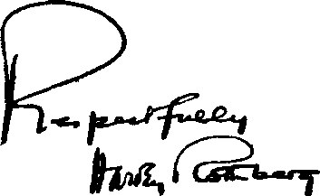

A JOURNAL OF FACT HOPE AND COURAGE
iiiiiiiiiiiiiiiiiiiiiiiiiiiiiiiiiiiiiiiiiiiiiiiiiiiiiiiiiiiifiiiiiiiiiiiiiiiiiii in this issue GERMANY UNDER DOMINATION OF SATAN PLAINFIELD CITIZENS OBJECT
THE ABUNDANT METAL POISONING BY ASPIRIN NOTES ON NEWS PURPOSE OF ALL CREATION iiiiiiiiiiiiiiiiiiiiiiiiiitiiiiiiiiiiiiiriiiiiiiiiiiiiiiniiiiiiiiiiiiiiiiiiiiii
every other WEDNESDAY
five cents a copy one dollar a year Canada & Foreign 1.25
Vol. XVI - No. 403 February 27, 1935
•©Rs*
CONTENTS
LABOR AND ECONOMICS
What Could One Expect ? . . . . 336
Shadowed Childhood.....337
Water for San Francisco .... 337
Taxation Borne by the People . . 337
SOCIAL AND EDUCATIONAL
In Defense of Fairness .... 328
Citizens of Plainfield Object . . 330
Church Membership Increasing? . 331
Yes We Don’t Want Intervention . 332
Perpetuating a Falsehood .... 334
A Difficult Case.......334
Cardinal O’Connell on Persecution 335
The Ruthless Go-Getters .... 335
Turkey Ahead of United States . . 334
Pickets at Broadway Tabernacle . 336
The World Foundation? .... 338
MANUFACTURING AND MINING
FINANCE—COMMERCE—TRANSPORTATION
Precautions Against Marine Disasters
POLITICAL—DOMESTIC AND FOREIGN
Germany under Domination
Farley’s Condescension (?) . . . 332
Charged with “Sedition” .... 332
Coughlin and Monroe Doctrine . . 334 Still Trying to Get the U. S. In . . 337 Another Dictator Plot
“Mission of National Socialism” . 338
AGRICULTURE AND HUSBANDRY
SCIENCE AND INVENTION
Lifting Forty Billion Tons . . . 339 Testing Dams by Musical Pitch . . 339 “Photographing” Thought . . . 339 Seven Eclipses in 1985.....339
HOME AND HEALTH
Cancer Killed 17,000 in New York . 340 The Influenza Patient
Probably True ........ 341 The Abundant Metal Again . . 341 Poisoning by Aspirin
TRAVEL AND MISCELLANY
American Bishops Welcome . . . 332
Treasure in the East River . . . 339 Methodist Church in the Depression 351
RELIGION AND PHILOSOPHY
The Purpose of All Creation . . 347
Published every other Wednesday by
GOLDEN AGE PUBLISHING COMPANY, INC.
117 Adams Street, Brooklyn, N. Y., U. S. A.
Clayton J. Woodworth President Nathan H. Knorr Vice President
Charles E. Wagner Secretary and Treasurer
FIVE CENTS A COPY
$1 a year, United States; $1.25 to Canada and all other countries.
Notice to Subscbibebs
Remittances : For your own safety, remit by postal or express money order. When coin or currency is lost in the ordinary mails, there is no redress. Remittances from countries other than those named below may be made to the Brooklyn office, but only by intebnational postal money order.
Receipt of a new or renewal subscription win be acknowledged only when requested. Notice of expibation is sent with the journal one month before subscription expires. Please renew promptly to avoid loss of copies.
Send change of addbess direct to us rather than to the post office. Your request should reach us at least two weeks before the date of issue with which it is to take effect. Send your old as well as the new address. Copies will not be forwarded by the post office to your new address unless extra postage is provided by you.
Published also in Bohemian, Danish, Dutch, Finnish, French, German, Greek, Japanese^ Norwegian, Polish, Spanish, Swedish.
„ . Offices foe Otheb countbies
British ........ 34 Craven Terrace, London, W. 2, England Canadian.......40 Irwin Avenue, Toronto 5. Ontario, Canada
Australasian .... 7 Beresford Road, Strathfield, N. S. W., Australia South African...... . Boston House, Cape Town, South Africa
Entered as second-class matter at Brooklyn, N. Y„ under the Act of March 3, 1879.
Volume XVI Brooklyn, N. Y., Wednesday, February 27, 1935 Number 403
Germany Completely Under the Domination of Satan
GERMANY is completely under the domination of Satan. The present-day fulfilment of prophecy should fully convince all who have a knowledge of the Bible that the battle of the great day of G-od Almighty is near, and hence the time for the vindication of Jehovah’s name. Jesus uttered this prophecy which is now being fulfilled, to wit: “And I saw coming out of the mouth of the dragon, and out of the mouth of the beast, and out of the mouth of the false prophet, three unclean spirits, as it were frogs; for they are spirits of demons, working signs; which go forth unto the kings of the whole world, to gather them together unto the war of the great day of God, the Almighty. And they gathered them together into the place which is called in Hebrew Har-Magedon.”—Revelation 16:13,14,16, R. V.
Germany is entirely in the camp of Satan and is openly defying God and His kingdom, as will be observed from newspaper reports and court decisions now being rendered, some of which are herein set out. The Northland Magazine of Germany, a Hitler publication, says:
Those who belong to the past should not worry about the way of German youth. The epoch of Christianity is absolutely done. A new myth arises born out of the battle of words of the twentieth century, a myth of blood which will decide over the fate of this people for centuries. The idea of gathering all peoples under the world-God Jehovah dies with the last generation of an inglorious age.... May the representatives of the old spirit finally acknowledge that the church with all her dogmas of the middle ages has lived its span and cannot offer anything further to the youth. The German youth of the 20th century acknowledges proudly that it can live without sin and therefore without grace.
The same paper, in another issue, says:
In the sign of the cross the Orient conquered the North. In the sign of the swastica the north will for ever bring to its knees all Asiadom.
The Christian World, No. 19, page 908, states that President Kube said:
“We will see to it that Germany’s youth will be brought up in the proud spirit of Langemark and not in any confessional spirit. The faith of the German youth is in Germany only.... Therefore you should remember one thing in to-day’s confessional controversy : God wishes, my German boy, that on earth you should believe in Germany and in its immortal life and we will enforce the right to such a faith for you. Adolph Hitler yesterday and to-day and for ever.”
The courts are completely under the domination of Satan. The unreasonable and devilish spirit that controls them is evidenced by the decisions recently rendered. For instance, one court sentenced a young man to prison because he showed his lady friend some scriptures in the Bible concerning God’s kingdom. The judicial opinion filed by the said court of Storbeck in the case of Germany vs. Honemann et al is here set out, to wit:
Court Opinion
S. G. M. 65/34 in connection with S. G. M. 66/34
In the name of the German people
Criminal proceedings against
1. Wilhelm Honemann, invalid (formerly assistant railway clerk), of Elster, at present in police protective custody in the police prison in Halle S., born on September 12,1888, at Dussnitz, Sehwied-nitz district;
2. Wilhelm Conrad, mill owner, of Elster, born on December 31, 1878, in Pullupbnen, Stallponen district;
3. Mrs. Alma Conrad, formerly Hille, of Elster, born on October 1, 1885, at Elster, Wittenberg district;
4. Hermann Harz, railway laborer, of Elster, born on August 28, 1877, at Riesdorf, Jiiterbod district;
5. Mrs. Ernestine Harz, formerly Tauscher, of Elster, born on January 3, 1883, at Kurbitz;
6. Friedrich Gehne, engine-driver, of Zschornewitz, at present in police protective custody in the police prison Halle, bom on October 18, 1898, at Nienburg S.;
7. Richard Volker, machine artificer, of Burgkemnitz, at present in police protective custody in the police prison in Halle S., horn on December 26, 1899, in Dessau;
8. Emil Mathei, mine laborer, of Zschornewitz, born on April 14, 1897, at Gornitz, Netze district;
9. Ernst Richter, laborer, of Qrossmohlau, born on September 17, 1872, at Pratau;
on account of transgressions against §§1, 4, of the Administrative Decree dated February 28, 1933 (Reichs Law Sheet 1, page 83, in connection with the decree of the Prussian Minister of the Interior, dated August 24, 1933) II 1316a (August 23, 1933) and furthermore of the Secret State police office of September 28, 1934 - II B 1. 30621/1667.
The Special Court of the province Saxony and the country of Anhalt has, in its session held on November 20, 1934, at Halle S., and in which took part
Dr. Fenner, director of the Provincial Court, as president;
Dr. Haberkorn, councilor of the Provincial Court, Storbeck, councilor of the Provincial Court, as assistant judges;
Rabbow, councilor of the Public Prosecution, as official of the Public Prosecutor;
Heinrich, clerk of the legal authorities as documentary official of the Office, adjudged as legal and right:
The defendants are each sentenced to three months’ imprisonment on account and by reason of transgressions against §§ 1 and 4 of the Administrative Decree of the Reichspresident for the Protection of People and State, dated February 28, 1933, in connection with the decree of the Prussian Minister of the Interior, dated June 24, 1933.
The defendants have to bear the costs of the proceedings.
Reasons:
By reason of the confession of the defendants and the testimony of the witness Criminal Assistant Nestler, it is established that the defendants have participated regularly in religious gatherings, whereby parts of the Bible have been read and discussed, etc., in a similar way as was customary before the prohibition, after the issue of the prohibition of the “International Bible Students Association” (I.B.S.A., including all its organizations) dated June 24, 1933, of the Prussian Minister of the Interior. As the defendants themselves state it, these gatherings differ from those which were held before the prohibition was issued, in general only in so far as they took place in smaller circles. The defendants no longer call themselves Bible Students. They state: The I.B.S.A. is now dissolved. There are now only Jehovah’s witnesses (vide Harz), they mostly call themselves “witnesses of Jehovah” (as, for instance, Heinemann, Mr. and Mrs. Harz) or “Jonadabs”, that is, “people who stand on the side of God” (as Conrad) or “consecrated Christians” and “followers of Jesus” (as Mathei). They acknowledge on principle only the authority of Jehovah, the laws, etc., of worldly authorities, instance courts, etc., only in so far as these do not, according to their, the defendants’, opinions and ideas, come into conflict with the laws and decrees of Jehovah.
That latter has, as they state, come into contact with them personally, so that they themselves do not need any more teachings or enlightenment (vide Gehne).
It is, however, their duty to visit one another and to gather together as this procedure is prescribed by the commandments of Jehovah (letter to the Hebrews) (vide Mrs. Harz). They will not allow themselves to be hindered in this by any worldly power whatsoever. They have therefore also come together to set up a petition to Reichschancellor Adolf Hitler such as is to be found in the files, and which, in substance, says that they would come together in spite of the prohibition....
According to the declarations of the defendants, the literature of the kind which was in the possession of various and single defendants, and which was confiscated, was intended for those that were still to be converted. Various defendants receive such literature from Berne, as, for instance, The Golden Age, Escape to the Kingdom, Righteous Ruler, etc. Reference is made to this literature.
The defendants have partly also sent money abroad for such literature. When they received deliveries of this kind from abroad, they regarded them as a present from Heaven.
Although the defendants admit the substantial circumstances, they, after all, believe that they have not rendered themselves liable to punishment. They eall attention to the fact that, as members of a religious body, they have been active only in a religious sense. They refer to the Weimar Constitution (Art. 137), as well as to the principles of the National Socialism regarding freedom of religion, and consider the prohibition of I.B.S.A. as contravening the said principles and the Reichs Constitution, and invalid, and point out explicitly that the Constitution could only be altered by a Reichs law which altered the Constitution, but not by a decree of the Reichspresident, such as that of February 28, 1933. They, first of all, lay claim to the fact that the Ministerial Decree dated June 24, 1933, whereby the I.B.S.A., inclusive of all its organizations (Watch Tower Bible & Tract Society, Magdeburg, etc.), is dissolved and prohibited in the territory of the Free State of Prussia, was rescinded by the letter of the Reichsminister to the American Consul General, dated September 13, 1934. This, however, is not the case. By the decree of June 24, 1933, the property and monies were also confiscated and sequestrated. In the letter of September 13,1934, it was mentioned principally that the governments of the countries have received orders to release the property and monies and not to furthermore hinder the printing and distribution of Bibles and other unsuspicious literature. The letter of September 13,1934, furthermore, however, contains the explicit passage: “On the other hand, every other activity of the Earnest Bible Students, such as teaching and meeting work, as well as the printing and distribution of tracts, leaflets, propaganda bills, etc., must remain stopped.”
In view of this, therefore, teaching and holding meetings and the distribution of suspicious literature is forbidden, just as heretofore, and is punishable in accordance with the decree of June 24, 1933, by reason of §4 of the Administrative Decree of February 28, 1933.
More especially is therewith also every kind of meeting activity of the I.B.S.A., etc., of hitherto, prohibited. The defendants cannot take it that in view of the fact that their meetings no longer have such large audiences as hitherto, and are therefore of a smaller kind, such gatherings are of a different character and therefore do not come under the heading of gatherings which are prohibited.
The counsel for defense has, amongst other things, put forward the Verdict of the Special Court of Darmstadt, dated March 26, 1934, S. G. M. 26/24. In this verdict the corresponding Decree of Hessen has been considered illegal, because it contravened Article 137, paragraph 2, of the Reichs Constitution.
The Special Court has, however, no scruples about the validity of the Prussian regulations mentioned.
It is correct that Article 137 of the Reichs Constitution “guarantees the freedom of unity of religious societies” and that this is still in force. But this can apply only and solely to such societies as do not wish to be and, above all, are really nothing else than religious societies. Only in this sense may and must Articles 136 and 137 of the Reichs Constitution be construed.
The National Socialistic State assures only religious confessions their freedom, under the proviso, as a matter of course valid for every state, that the practice of “religion” does not show up in such a way as to endanger the stability of the State.
Religious societies are therefore protected, in accordance with the Reichs Constitution, in so far only as they do not endanger the State.
The National Socialistic basic comprehension re this is to be seen in No. 24 of the program of the N S D A P. There we read:
"We demand the freedom of all religious confessions in the State, in so far as they do not endanger the stability of same or infringe the feelings of morality and good breeding of the Germanic race. The party as such take up the standpoint of a positive Christianity, without binding itself confessionally to any certain creed. It combats the Jewish-materialistie spirit in and around us and is convinced that a permanent convalescence of our nation can only result from within on the basis of mutual interest before self-interest."
The cultural political principles of the N S D A P comprises, just as it does the aphorisms “Full freedom of religion and opinion” and “Special protection of Christian Confessional creeds”, also the demand: “Suppression and keeping out of all confessional doctrines which go against the German feelings of morality, the contents of which doctrines show a character destructive of state and people. ’ ’ As with every other law, so can also the Reichs Constitution be interpreted in various ways. When interpreting any law whatsoever, the real sense of the law must be ascertained and fixed. The Court must not stick to single letters or words. It would therefore be quite unreasonable to protect any kind of state-endangering contrivance simply because it appears clothed in the cloak of a religious society.
Every state abandons itself that (and this the more especially if by the terms of its Constitution) supports and protects an organization that fights against it to the utmost. It cannot possibly be desirous of protecting state-endangering endeavors solely for sake of their exterior form.
Were the I.B.S.A., as represented by their advocates living in Germany, only a religious community, and were their members in Germany to concern themselves only with religion, then this work and activity could never be prohibited. More especially the National Socialistic State would not have the slightest interest whatever in going up against these endeavors. The representatives of the I.B.S.A. and their supporters or a similar lot, such as the defendants, are not satisfied, however, with dealing only with religious questions.
As the defendants clearly pointed out to the Special Court, they considered it their duty to convince as large a circle of the people as possible of the correctness of their doctrines, by distributing the literature in question and by propagating their ideas and thoughts.
In these pamphlets, booklets, etc., however, the Third Reich is baited in a very nasty way. The literature which was distributed by the defendants and which was partly confiscated whilst in their possession is full of destructive and decomposing material, of attacks against the government of the Reich and of thoughts which, without the slightest doubt, are of a nature destructive to state and people.
The fact that all these state-endangering and state-hostile ideas are brought out under cover of a trumpeting of religious creed is especially dangerous. Thereby all such as do not know conditions in detail are led astray. But in this case, it is not a matter of belief, pure and simple. It is rather the ease that, under the cloak of religion, a systematic, especially bitter struggle is carried on against the state of today, under the leadership of a foreign management abroad, against which the German State has no influence whatever.
A few examples taken from the literature above mentioned will explain this:
The (Swiss) Golden Age, Berne, No. 281 (June 1934, page 15), deals with the only too justified demands of the government to allow the prohibition of meetings to remain in force. These demands are termed as curious and ridiculous. It is pointed out that a well-known high official of the American government has said with regard to the Nazi leaders, that: “Such as the gods will destroy, they first make mad.’’
“The vain boasting of the German officials is censured. ’ ’
Obviously with reference to the Reichs Chancelor and Leader, after mention having been made of the letters and telegrams addressed to him, it is said that “the enemy Satan tries to destroy such as have the testimony of Jesus Christ. The servant is not above his master”.
“Thus we see that the Devil nowadays parodically imitates the kingdom of God and that he tries to divert the attention of the people from the true Kingdom of God.”
“The above facts clearly prove that the Third Reich does not dare to style itself a component part of the Kingdom of God.”
The “unjust measures of the German authorities” are described with a complete distortion of the real facts to the extent that “our brothers” (sometimes mention is also made of “sisters”) “have been beaten and ill-treated in the concentration camps, and this only on account of their faith in God and Christ”. (That means a misuse of religious feelings and sentiments, to work up the people against the State.)
Of the “brothers” it is said that they have stood firm in their belief and have given eloquent witness before the cruel agents of Satan, the Devil, who has been “a murderer from the beginning”.
On page 13 “the persecutions of the Christians” are described.
On page 11 these alleged persecutions are compared with the persecutions of the Christians in the Middle Ages. Detailed outrageous news is given as coming from concentration camps.
In a proclamation “to the members and officials of my former congregation” a leader gives vent to the following, on sheet 11, which sums up in “The Kingdom of God is now about to be set up”. “But that, before it is completely set up, Satan’s cruel, oppressive organization, which nowadays completely domineers over all the governments of the earth, and especially over those of ‘Christendom’, must be done away with for ever, in the battle of Armageddon. ’ ’
In No. 285 of The Golden Age we find, on page 12, the following poem:
* ‘ The training of heroes ’ ’— A whole people must crouch And bow down under drill; The press must hush up And keep as quiet as a mouse; Bight must not show itself; Truth is hated.
And thus ‘‘heroes are trained
That serve their purposes”.
At the same time a picture shows a man swinging a whip over a company of men drilling.
The adherents of the I.B.S.A. are therefore, as is shown by these specimens, without the slightest doubt, hostile and opposed to the State, and most especially to the National Socialistic State, and also operate and strengthen this hostility thereby, inasmuch as they come together in small circles as in former times and stick together, having printed matter of the kind shown above, sent from abroad, and which latter they distribute in this country. As the Special Court in Darmstadt has quite correctly stated, in the abovementioned verdict on this point, they reject the State altogether as a “work of the Devil”. They are subject to foreign influences which cannot be gone into and examined and show Jewish tendencies.
It is a vital necessity for the new state to protect itself most decidedly against such state-endangering contrivances.
The Special Court has convinced itself, by the impression it got in the Chief Session, of the personalities of the defendants and their manner of appearance before the Court, how very right the Prussian Minister of the Interior was, when he states, in the decree of June 24, 1933, that “their methods of contest are characterized by a fanatical influencing of their adherents”.
As is furthermore stated, an astonishingly large number of adherents of former communistic and marxistic parties and organizations have been received into the ranks of the Bible Students.
There can consequently be absolutely no question of the prohibition of the I.B.S.A., etc., as having infringed upon the Constitution of the Reich. For Articles 135 and the following ones, in view of their aforementioned, alone possible sense and purpose (and that is what really comes into consideration, not the single letter), cover and protect only purely and exclusively religious societies, but not associations like the I.B.S.A. or the “witnesses of Jehovah”, which are assuredly also religious societies, but apart from that are furthermore eminently state-endangering unions. The Prussian prohibition, rather than being a violation of the Constitution, was an urgent necessity, because elements hostile to the State had joined up under the cloak of a religious society to develop activities hostile to the State.
The defendants have therefore to be punished in accordance with §4 of the Administrative Decree of February 28, 1933, by reason of contravention of the decree of the Minister, dated June 24, 1933, for renewed activity in the sense of the I.B.S.A. The law provides for imprisonment for from not under one month up to five years or for a fine up to Marks 15,000.
The Court has taken into consideration the fact that, with the exception of one of the defendants, all of the latter have hitherto been without punishment. On the other hand, however, the danger which indeed is to be perceived for the German community had to be considered.
A penalty of three months’ imprisonment seemed therefore to be the necessary but also quite sufficient atonement for the deed.
The decision regarding the charges is based upon §§ 464, 465, Criminal Law Regulations.
(Signed) Dr. Fenner Dr. Haberkorn Storbeck
Both by word and by act the government and the courts of Germany show that they do not care what the commandments of Jehovah God may be. They boldly condemn honest men and women for the perfectly reasonable and proper stand that human laws can be properly obeyed and enforced only if they are in accord with the divine law. The issue is clearly drawn. Other servants of God than those already mentioned are similarly unjustly condemned and punished. The Westfalische Landeszeitung Rote Erde of November 13, 1934, calling Jehovah’s witnesses “fanatical sectarians, the religious garb for international movements”, says:
Mrs. Lydia Herrmann, 22 years of age, whose husband is also accused and in a concentration camp as a former communist, and Mrs. Luise Schwedler, 42 years old, both from Castrop-Rauxel, had to appear before the Dortmund Court and account for the distribution of forbidden literature of the International and therefore dissolved Association of the “Earnest Bible Students”.
Mrs. Lydia H. appeared rather challenging and assured the Court that in calling upon Jehovah she would in the future also do her duty in this, that she would call the attention of her fellow-men to the Kingdom of God and the near establishment of the Kingdom of Christ Jesus on earth.
For this great offense the court of justice (?) sentenced Mrs. Herrmann to one year in prison, and her fellow witness to nine months. The sentence was made severe because the accused “showed no repentance”. Such is religious liberty in Germany today. But Satan is not limiting his activities to that land. In America, England, Canada, and other countries where a measure of freedom of speech still obtains, desperate efforts are made to control the freedom of speech and the publication of the truth. Unreasonable laws, cunningly framed, are advanced to suppress the liberties of the people and to make them amenable to the arbitrary and shortsighted policies of fallible men in contravention of the Word of God. We may expect to see these priceless liberties, bought at such great cost, shortly taken away from the people.
But what is back of all this retrogression, this turning back to Dark Age methods and practices? What power, unseen but clearly in evidence, is limiting and circumscribing the rights, privileges and liberties of the people? What is back of it all? The Scriptures answer, It is the power of the demons. These, under the leadership of the rapacious Gog, are seeking to bring together, and do bring together, the ruling powers of the earth in a determined stand against righteousness and truth, and, above all, against Jehovah, the eternal God. Only recently The News of the World, London, carried an article in which Lord Riddell told how Lloyd George and Winston Churchill believe themselves to be under the guidance of unseen powers or spirits. The article reads, in part, as follows:
We (Lord Riddell and Mr. Lloyd George) walked along the shore (at Criccieth), and sat for some time on the rocks watching the waves. L. G. gave me an insight into a curious side of his character.
He showed me a letter he had received from a palmist and soothsayer, who stated, among other things, that L. G. was beset by many dangers, but would be protected by unseen spirits until he had accomplished a great mission he was destined to perform.
L. G. said: “That is a remarkable statement, because I am myself convinced that nothing will be allowed to happen to me until I have accomplished some great work for which I have been singled out. I feel that I shall be quite secure until then.”
I said: “But what is to happen afterwards?”
“Ah,” he replied, “afterwards! Well, afterwards, I suppose I shall share the fate of all other men who have been selected to perform great works. I shall be left to my fate. I shall be deserted. ’ ’
In January, 1914, when he was fighting a ding-dong battle in the cabinet for a stronger navy, Mr. Winston Churchill also confided to Lord Riddell that he was “watched over”.
“Think,” he said, “of the perils I have escaped.”
Hitler, too, is considered as under the direction of some “spirit”. In a German illustrated magazine there appeared a reproduction of a picture which hangs in the Brandenburg Hall of the City Hall of Berlin-Schoneberg. The title of the picture is “The divine mission of NationalSocialism”. It represents Hitler standing upon a mountain, and in the sky appears an angel offering him a globe upon which appears the swastika. Other prominent men and leaders in the financial and political field, as well as in ecclesiastical circles, are known to have communication of one kind or another with invisible powers. Spirit mediums frequently figure in
their lives, while others have great faith in horo- There will be only two sides in that great final
scope readings, occult revelations and what not. All these things, according to the Holy Scriptures, are definitely of the Devil and his invisible cohorts.
In this connection attention is called to the booklet Angels, published by the Watch Tower Bible & Tract Society, Brooklyn, N.Y., which booklet clearly sets forth the position and the activities of these demons, or fallen angels. A clear understanding of this matter is now possible, and is of the greatest importance to those who would be found on the side of Jehovah God in the great conflict that is fast approaching. battle. Satan’s forces, under the leadership of Gog, will fight against the hosts of Jehovah, under the direction of Christ Jesus. On which side will you be? Knowledge is of the greatest consequence. Satan will deceive all who do not love truth and righteousness and who refuse to obey Jehovah God, but the Lord has made provision for the enlightenment of the meek and honest-hearted, the people of good will. These, like Jonadab of old, will be in heart harmony with Jehovah’s King, the Greater Jehu, and will ‘ride with Him, in His chariot’, as He vanquishes the hosts of wickedness for all time.
THAT a few clergymen are not entirely blind to common justice and fairness is evident from the fact that at the trial of two of Jehovah’s witnesses in Quebec recently, Louis Abram, a United church pastor, appeared as a defense witness. He stated that while he did not agree with all the teachings in the books distributed by Jehovah’s witnesses he was not of the opinion that they were of a nature to incite the people to revolt. It was another clergyman, L. M. Pepperdene of the Anglican church, who made such a charge, saying that the writings in question were “subversive to law and order and held in contempt all constituted authority”. He said he testified with the sanction of the bishop of Quebec as a representative of the Anglican church.
The Witness and Canadian Homestead of Montreal, in its issue of November 28,1934, discussing the trial, said, in part:
Freedom of speech and religion in the province of Quebec received another body blow last week by the imposition of fines or imprisonment upon members of the sect calling themselves “Jehovah’s witnesses” on charges of sedition. The “sedition” consisted of severe animadversions upon modern governments and the churches, Roman Catholic and Protestant, contained in booklets which the accused people were selling in the city of Quebec. ... Critical as they are of most human institutions, they have not been shown at any time to have urged violent overturning of these—preferring as they do to predict that God himself will destroy that which is unworthy. What they said about the various Protestant churches is pretty much what ardent Roman Catholic apologists have themselves said on repeated occasions. It is diffi-
cult to resist the suspicion that it was their inclusion of the Roman Catholic church in their condemnation and their references to the pope that prompted the prosecutions. Freedom of speech as a principle must be upheld even for the protection of a truculent minority. Because of their unpopular opinions, this particular minority’s plight has been ignored by many who would have leaped to the defense of any orthodox religious body whose elementary rights were menaced. But it is not freedom at all, if it is denied to the weak and unpopular. It is indeed painful to see a Church of England clergyman with, as he claimed, the approval of the Anglican bishop of Quebec, joining in the attack by taking the witness box to testify that what the pamphlets contained could fairly be described as sedition. It ought surely to be evident both to the rector and to his ecclesiastical superior that the proceedings at Quebec are merely another phase of the same brand of intolerance which in Montreal is bringing before the courts an Anglican brother clergyman on a charge of blasphemy for saying in public and in print what all three believe of a distinctive Roman Catholic doctrine, and which also in Montreal is dissolving legally celebrated marriages upon the strength of Roman Catholic ecclesiastical decrees against which Bishop Lennox-Williams of Quebec has himself made emphatic protest. Open freedom of speech is far safer than subterranean whisperings.
This impartial comment brought forth the following observation from Allan H. Ferry, a clergyman of Corbetton, Ont., which appeared in the December 12 issue of the Witness and Canadian Homestead:
Sir:—May I compliment you on your editorial in the issue of November 28 under the caption “This Freedom”? I cannot help wondering whether we are embarking on an era of religious persecution in Canada, when I read of such cases as the one referred to by you, and others that are known to some of us but which have not reached the publicity stage. ...
In the same issue appeared a long letter from the “Rev.” L. M. Pepperdene, who evidently got hot under the clerical collar when he read something that seemed to favor even a measure of fairness and impartiality. In this letter Pepperdene included several alleged quotations from hooks distributed by Jehovah’s witnesses. These excerpts were so arranged as to give the impression that Jehovah’s witnesses denied the resurrection of Jesus Christ from the dead, a glaring misrepresentation. If Pepperdene had lied outright his object could not have been more patent. He sought to shock the religious susceptibilities of the readers of the Witness and Canadian Homestead so that they would ever thereafter be thoroughly prejudiced against them. Pepperdene, both in his testimony and in his letter, was a “false witness”; for his unfairness is evident even to the Witness and Canadian Homestead, as will be seen from their comment on Pepperdene’s letter. Judge Rutherford has charged that Catholic and Protestant clergymen are in a conspiracy against Jehovah’s witnesses and their work. Pepperdene’s letter shows that this charge is in no sense an exaggeration. The Golden Age quotes at length from Pepperdene’s letter and from comment thereon appearing in the Witness and Canadian Homestead as follows:
(To the Editor of the Witness)
Sir:—I have read and reread your editorial of November 28, regarding the recent conviction of the self-styled “Jehovah’s witnesses” in the Quebec court during the previous week, with much interest.
I feel that you are not conversant with all the facts of the case. In the first place you write as though his lordship the bishop and myself were the only Protestant' clergy who had taken action in this matter. I should like to advise you, out of fairness to my bishop, that the action which I took was the outcome of a conference of the Protestant clergy in Quebec at which every Protestant church was represented with but one exception. At that conference, besides myself, representing the Anglican church, there was the Rev. Dr. Gordon of the Presbyterian church and the Rev. Mr. Matheson of the United church. We discussed the matter very fully, not even forgetting the case of Mr. Rahard of Montreal, and finally came to the conclusion that there was no comparison between the two cases, the one in which we as Christian ministers were interested here in Quebec, and the one in Montreal in which we are all also interested.
For reasons which are of little interest to anyone other than ourselves, I was asked if I would take the stand as representing the group. This I did only after further very serious consideration and prayer.
Personally I cannot feel that the question of freedom of speech is so vitally involved in this case. The trouble with so many people is, that they will confuse freedom of speech with license. These people have not been denied freedom of speech; they have never to my knowledge tried to hold a meeting and address the public in decent language. They came to Quebec under cover of early morning darkness and proceeded to scatter abroad literature which attacked everything which a Christian ought to hold most sacred. Literature which I would not have fall into the hands of my own children were they old enough to read it, under any consideration. ...
Let me assure you, my dear sir, that the group of clergymen whom I represented in the witness box at that trial would be just as zealous, if not more so, to defend any orthodox Christian, or anyone else, for that matter, whose fundamental rights were menaced. But to spread among a peaceful community literature which is seditious, libelous and slanderous, is not a fundamental right of any citizen, and more especially when it is imported from a foreign country. It is not British. It is not Christian.
Your article of November held a very prominent place in your paper. I hope that you will publish this letter in an equally prominent place.
Sincerely yours,
L. M. Pepperdene.
Note:—Mr. Pepperdene makes the very common error of confusing defense of a principle with support of the beliefs of those for whom application of that principle is advocated. St. Paul’s warfare for the faith was purely spiritual and polemic, We have yet to learn that he sought the aid of the civil power, or called for the exercise of force against those who taught “another gospel”. Liberty is not liberty at all unless it is extended to all alike. It becomes a mockery when refused to an unpopular minority. It includes the right of talking nonsense, such as we believe the peculiar doctrines of “Jehovah’s witnesses” to be. The appearance on the witness stand of a Protestant clergyman in support of the case for the defense shows that not all Quebec Protestantism was prepared to lend itself to the aims of an intolerant majority. It will hardly be argued that this minister’s testimony—that he did not look upon the literature dispensed by the accused as ‘ 'seditious ’ ’—implies that he agrees whole-heartedly with its contents. Literature which in Mr. Pepperdene’s phrase, is “seditious, libelous and slanderous” is proscribed by the laws of every civilized country. It is strange that the literature under review has not encountered legal inhibition in any parts of Canada or the British Empire other than in Quebec, where the courts have been called to the aid of religious intolerance. A recent dispatch from Germany tells of a jail sentence imposed on a member of the sect in Berlin. It would be interesting to know how many of the clergymen who lent their aid to this prosecution bestirred themselves when, in 1933, a young “orthodox Christian” was brought to trial in the same city for blasphemy for selling or distributing a pamphlet written by a Baptist minister of Ottawa. True, the Christian church ought to expose heresies—even such as are hugged by the dominant majority in this province. And is there no distortion or suppression of truth among Protestants? Experience since the days of the early church has shown that the least effective method of extirpating error is by persecuting it. A martyr now and again strengthens the cause for which he suffers. Do Mr. Pepperdene and his fellow-pastors really think that the propagation of the errors of “Jehovah’s witnesses” will be in any way checked by this invoking of the arm of flesh, even should the appeal of the convicted persons be rejected by a higher court of law? Nothing the erroneous sect can do will impair the Christian church so much as the negation of Christ by its members in everyday individual and national life. The Witness has long and earnestly looked for the closer coming together of all who profess and call themselves Christians, but the kind of co-operation of denominations which Mr. Pepperdene cites in his letter is one that it is to be hoped will not be repeated. Better isolation than to unite in what, were the shoe on the other foot, would rightly be regarded as a conspiracy against the operation of a sacred principle. Understanding the meaning of that word we cannot silently see it so violated that free speech is limited to those with whom we are in agreement.
THE clergy and police of Plainfield, N.J., continue to oppose and interfere with the circulation of the Kingdom message in that city. But many of the citizenry are beginning to tire of the needless trouble and expense resulting from these unlawful interferences with the people’s rights. This is evidenced by the following item which appeared in the Plainfield Post, January 25, 1935, and the “Protest and Request” which, together with a facsimile copy of a letter written by Assistant Attorney General Harvey Rothberg, also were given prominent places in that paper. These items will be of great interest to Golden Age readers, and are therefore reproduced herewith:
Citizens Resent Arrest of Jehovah’s witnesses RESIDENT TAXPAYERS INSIST NEEDLESS EXPENSE FOR PROSECUTION CEASE AT ONCE
During the past week public-spirited citizens of Plainfield have been stirred deeply by facts brought to light concerning the misleading stories circulated from time to time by members of the Plainfield police force with co-operation of the Courier-News regarding the arrest and imprisonment of Jehovah’s witnesses who occasionally call at homes in all parts of the city.
As an example of public opinion, the Post reproduces in this issue the letter of Harvey Rothberg, a resident who is the State’s assistant attorney general.
In the public interest, we take pleasure in presenting also in this issue the complete text of a “Protest and Request” which has already been signed by hundreds of resident taxpayers who disapprove of the expenditure of public funds for needless prosecution of inoffensive persons who are doing a good work in the community.
protest and request
To the Mayor and the Common Council by the Inhabitants of the City of Plainfield: Greetings
We the undersigned resident taxpayers of Plainfield, New Jersey, possessing the right to learn of and to hear broadcast by radio such programs as we may desire and to read such printed matter as is pleasing to us, and this without interference or hindrance from or by the officials or nonofficials of this city, do hereby vigorously protest against the persistent and wrongful interference with our said rights by the police and clergy or others of this city who do so interfere by causing the arrest and arresting and prosecuting certain harmless persons known as Jehovah’s witnesses and who call at our homes with radio programs and other printed matter.
The Watchtower radio programs and the publications of and concerning the kingdom of Jehovah God are of great interest to us and it is our desire and we do hereby request that the persons known as Jehovah’s witnesses should call at our homes from time to time and exhibit to us such radio programs and publications concerning the Bible testimony of God’s kingdom which right so to do is guaranteed to all persons by the Constitution of this state.
We therefore respectfully call upon you
State of New Jebsey State Highway Commission
Habvey Bothbeho
Assistant Attobnby Gbnebax,
Zz, rfAS
as officials of this city to immediately take proper and necessary steps to prevent such hindrance and interference with our rights to have persons known as Jehovah's witnesses call at our homes as aforesaid and for the purpose aforesaid and that the use of the taxpayers’ money to prosecute Jehovah ’s witnesses cease now and for all time.
Paul Revere No. 2
THE police towing car was advancing through Germantown (Pa.) to capture parked autos.
But a modern Paul Revere, in an automobile, rode ahead of the police car, dashing up to houses and warning owners of parked cars, who moved them in time to avoid a $6 fine for allnight parking. On and on went “Paul Revere”, and as the police car passed through the territory not a parked car was in sight Neither was “Paul Revere”.
Church Membership Increasing?
Db. Geobge L. Kieffeb, who is the president of the Association of Statisticians of American Religious Bodies, says that during the last 134 years the population of the United States had increased 22 fold, and church membership 80 fold. According to that, Americans were anything but churchy in the beginning of the nineteenth century. These figures sound imposing, but the fact remains that less than a third of the people in the United States are connected with the churches.
Yes We Don't Want Intervention
THE Catholic hierarchy is trying its best to get the United States mixed up in Mexico’s internal affairs, meanwhile declaring loudly that the Catholic church ‘don’t want intervention in Mexico, nohow’. One of the Hierarchy’s representatives, J. S. Holgan, is all “het up” because Mexico is going to have just plain Mexican schools and will not let the church interfere. Mexico has the right idea and wants to give the children a real opportunity to start life with a fairly sane outlook. General Calles had said, “We must enter into and take possession of the mind of childhood, the mind of youth.” The United States ambassador thought that was a good idea, and happened to express his thought too publicly. Now the Catholic hierarchy is trying to have him recalled. Soon, no doubt, we shall have Catholic societies sending resolutions to Congress or to the president, just as they sent resolutions to newspapers and radio stations in the case of Judge Rutherford in their effort to get him off the air. A little knowledge is a dangerous thing, particularly to the Hierarchy. And to have others adopt their scheme of getting possession of the mind of childhood is just too much for those who thrive on ignorance and superstition. We do not see, however, how anyone could do more harm than the Hierarchy has done in getting possession of the minds of the children. The Hierarchy would dearly love to see the United States do something about the Mexican situation, while they cry “Intolerance!” and other similar expressions of dismay. But it is very much like the boy who cried “Wolf!” too often. No attention is being paid to the Hierarchy’s loud and bitter howls. People just don’t believe what the Hierarchy tries to tell them. Confidence is not instilled by mere assertions. There must be something back of them. The Catholic church has not delivered the goods. The countries where she has exercised greatest power are the countries where she is least trusted. The United States government will do well to keep its eyes open.
Parley's Condescension (?)
WE CANNOT quite make out a picture which appeared in the press just lately. It caught the postmaster general of the United States in the act of getting down on his knees. The reason for it is not clear, but he is doing it
in front of a little man; and as Farley himself is quite big, it may be that he was just getting down to the level of this other man, whose name is Amleto Cicognani and who is called an “apostolic delegate”. Perhaps it was just to be on speaking terms with the little fellow that the postmaster general was so condescending as to stoop so low. It certainly cannot be, and yet it might, that the postmaster general was doing obeisance to the little man, and that it is all a part of the game. If that be so, and if Al Smith had been made president of the United States, Americans might have had the edifying (or mortifying) example of their president kneeling to a little representative of a little state in Italy. (There is no record that Cicognani said, “Stand up; I myself also am a man.”—See Acts 10:26.) And now they say Farley is going to resign as postmaster general.
American Bishops Welcome
Mr. Ratti, of the Vatican, familiarly known to Golden Age readers as Ambrose, likes to have the American bishops call on him. Every time an American bishop calls, papa gets a nice present, some bishops bringing as much as $60,000, and that amount is not to be sneezed at these days, not even by papa Ambrose. Last year the proceeds from these visits netted him over a million dollars. One of our subscribers, commenting on this fact, says, “Please note — $1,000,000 to Ambrose. Why not use this swag in the U. S. A. —in Ohio, for instance, where the Catholics are asking taxpayers to use State money to keep their propaganda schools going?” This answer to the question is fairly obvious.
Charged with “Sedition"
THE Daily Mail and Empire of November 24, 1934, contains the following item: “Sentences of two months in jail and fines of $300 each were to-day imposed on George Brodie, Toronto, and G. C. Barrett, Belleville, Ont., convicted on charges of being parties to a seditious conspiracy. Their lawyers have announced an appeal will be taken against the conviction.” The item does not state that the “sedition” consisted of a distribution of Bible literature. Since the incident occurred in Quebec, which is strongly Roman Catholic, it is clear why the distribution of Bible literature is considered “seditious”. It is well to remember that Jesus was crucified for “sedition”.
ID you know that there are people who worship a god who is kept prisoner in a breadbox, a very fancy and ornate breadbox, to be sure, but a prisoner nevertheless? And did you know that this god, should you see him taken out of his breadbox prison, would present himself to you as a wafer, a piece of bread, or several wafers? Such is nevertheless the case, and all the ceremony of the “temples made with hands” in which this god, duplicated a thousand times, dwells, centers around the idea that he is really there, in the breadbox, a prisoner. Before the breadbox burns a candle or taper continually. And, does it not surprise you to learn that the people who worship this “god” call themselves Christians at times, though they are more generally known as “Roman Catholics”? That the prisoner in the box is really the big power back of the priestly control of the people is not generally known. For only the priest can “create” this “god”, and the only way the worshipers can ever get out of purgatory or escape eternal torment is to eat him, while they are alive, or to have somebody else eat him for them after they die. All this comes from a literal and material interpretation of Jesus’ symbolical words, “He that eateth my flesh and drinketh my blood hath eternal life.”
The Eucharistic Quarterly tells about this prisoner in the breadbox: “He who is greater than all is left alone, with none to keep him company to while away the weary hours of the day and the dreary watches of the night—none but the tiny taper with its flickering light like a guard before the tabernacle door behind which is detained the prisoner of love ... in chains in our tabernacles.”
IN QUEBEC Jehovah’s witnesses are arrested and charged with “sedition" when they go around telling the people about the kingdom of God and the blessings it will bring to the world. In that same benighted province the priests of the Catholic hierarchy rule with a high hand. The following letter is a fair sample of the treatment they accord their parishioners when they do not come across with the cash demanded for the “support” of the rector. If there is a note of clemency and kindness in the letter, we have failed to detect it. The rector does not make allowance for parents who are having all they can do to make both ends meet. Jesus’ description of the scribes and Pharisees of His day exactly fits the clergy of the present. The exceptions are so few that'they cannot be taken into consideration. The letter, translated from the French, follows:
Lac Cayamont, Que., August 27, 1934.
Dear Parishioner:
Each year several do not occupy themselves in settling their question of support owed to the rector, and there are only a few to pay their support. To the end that all be treated with justice and equality here is what has been decided:
(a) Beginning January 1, 1935, those who will not have made a settlement for their support already due, namely, for the years 1934, 1933, etc., etc., ... will see themselves refused by me all exterior religious service, as call for the sick and others....
(b) Beginning January 1, 1935, every head of a family will have to settle the question of support before January 1 of each year, so as not to undergo the same penalty as the one indicated at No. (a).
(c) Beginning January 1, 1935, every man being 21 years of age and who is not chief of a family will have to pay a support of $1.00 each year or he will be subjected to the penalty indicated at No. (a).
Please communicate the contents of this letter to the members of your family who are interested to know it.
If this letter needs explanations, I will be able to give them to you at the visit of the parish which will take place in the month of September.
Yours in J. C.
(Signed) J. A. Latourelle,
Rector.
TO COMMEMORATE the Lord’s poverty when on earth, the Roman Catholic hierarchy keeps a large part of its membership poor. To commemorate the riches which the Lord left to redeem mankind, the priests and other members of the Hierarchy live in the greatest splendor. This was forcibly brought to the attention of the public when three golden chalices were stolen from the Roman Catholic Church of Our Lady of Victory, at Throop avenue, Brooklyn, N. Y. Each of the chalices was studded with diamonds, and the three were valued at $5,000. It is a very convenient arrangement to have the poor remember the poverty of the Lord, as the pope admonished the unemployed to do, while he and his assistants the world over forget that the Lord left His riches to become poor for the sake of fallen mankind, and especially to honor and vindicate His Father’s name.
( * IpATHER” Coughlin seems to be slightly confused, as he is trying to stir up the people of the United States against Mexico and to claim that the Monroe Doctrine makes it incumbent upon the United States to interfere. He is all mixed up. What the Monroe Doctrine says is that no European power shall interfere in the affairs of any independent government in the Western Hemisphere; and that would seem to indicate that the shoe is on the other foot; and that the United States, if it did anything, would call upon Vatican City to desist from interfering in the case of Mexico’s internal problems. The Monroe Doctrine reads as follows:
“With the existing colonies or dependencies of any European power, we have not interfered and shall not interfere. But, with the governments who have declared their independence and maintained it, whose independence we have, on great consideration and on just principles, acknowledged, we could not view any interposition for the purpose of oppressing them, or controlling in any other manner their destiny, by any European power, in any other light than as the manifestation of an unfriendly disposition toward the United States.”
Since the Vatican is a temporal European power, its interference in Mexican affairs through its tools in any part of the world is apparently in conflict with the terms of the Monroe Doctrine.
William O’Connell, otherwise Cardinal
O’Connell, celebrating his birthday in Boston, observed that Coughlin and “all clergymen, no matter what creed, tread hazardous ground” when trying directly to solve political or economic problems. To this “Father” Coughlin replied: “If he spoke as a churchman as he did on the three occasions when he publicly rebuked me he has done nothing more than to usurp the power which belongs to the apostolic delegate in America.” He goes on to say that he himself was carrying out the instructions of Pius XI and Leo XIII. Coughlin may come to the point where he will recognize that both of these gentlemen have usurped an authority which was never given them by the only sources of authority in the church, Jehovah God and His Son Jesus Christ. Another observation by Coughlin is of interest, to wit: “For more than forty years William Cardinal O’Connell has been more notorious for his silence on social justice than for any contribution he may have given either in practice or in doctrine toward the elimination of those glaring injustices which permitted the plutocrats of this nation to wax fat at the expense of the poor. Now he castigates me for doing what he was ordered to do.”
TN A REVIEW of Catholic activities during A- 1934 the Providence Visitor says:
The year saw further radio stations banning the broadcasts of “Judge” Rutherford, but it also saw petitions favorable to the retention of Rutherford broadcasts on the air descend upon members of Congress in great numbers. Investigations made in three separate cities showed that a large number of persons signing these petitions had no clear understanding of the petition they signed; that many had never heard “Judge” Rutherford’s broadcasts; that the names of some appeared on the list without their knowledge; that in a number of cases one person signed for a number of persons, and that many who signed were surprised to learn later the nature of the Rutherford broadcasts.
It need only be added that these “investigations” were made by Catholic agents who had no business to have the petition, in the first place, and whose words are not to be relied upon, in the second place. Members of Congress who turned over some of these petitions to the agents of the Romish priests thereby showed that they were not serving the people but the interests of a foreign meddler who is now trying to stir up trouble between Mexico and the United States to protect its own unrighteous schemes of extortion.
IT IS not often that stories of the escapades of
Catholic priests get into the papers, but censors apparently had difficulty in handling the case of “Father” John J. Leonard of Lawrenceville, N. J., murdered by a jealous husband. The story reads: “The five shots which Steinmetz allegedly poured from an automatic into the bodies of his wife and the priest brought hotel employees quickly to the room. Opening the door they saw the student lying in what they described as a ‘drunken stupor’.... Beside him lay the bodies of the wife and Father Leonard— fully clothed.” The addition of the last two words was probably the best the censor could do, considering the fact that the lady and the priest were found together in his bedroom.
THE New York Daily News of December 2, 1934, says: “Condemnation of Nazi persecution of Jews was voiced by Cardinal O’Connell of Boston yesterday when he returned on the Italian liner Saturnia from a two weeks’ visit to Pope Pius XI. ‘I have a horror of a race or religion being persecuted for no other reason than it is a race and a religion. No Christian can take sides in a matter of a persecution of a religion or a race.’ ” If we could only feel sure that the cardinal meant it. If he did, he should say something about the persecution of Jehovah’s witnesses in New Jersey and elsewhere and the boycotting of radio stations that broadcast Judge Rutherford’s lectures. The Roman Catholic church is back of that. It is likely, however, that the cardinal does not mean what he appears to say. Adept in casuistry, members of the Hierarchy can say things that appear to be directly contrary to the well known and long established policy of the Roman church, and then explain to the proper persons just what they did mean.
ASON was born to Mrs. Alfred L. Lyman (Roman Catholic) in a Jewish Sanatorium in New York city. Seven days later the child was circumcised and given a Jewish name, and inducted into the Jewish faith with full ritual, but all without the knowledge of his father or mother. Now the parents, true Roman Catholics, are suing the hospital for $75,000. It seems possible that Mr. and Mrs. Lyman have not heard of the tolerance and harmony that now exist between Catholics, Jews and Protestants, but it will probably be called to their attention by their ‘father confessor’, upon which they ■wdll forgive the mistake of the hospital authorities and will, unquestionably, withdraw the suit. Or will they?
Cardinal O’Connell, on the eve of the fiftieth anniversary of his entry into the priesthood, paid a visit to President Roosevelt. Subsequently the cardinal said, “I have never come to Washington without presenting myself to the president. ...” This is very nice of the cardinal. It shows his humility of mind. It shows, too, that he probably does not feel as bitter toward Protestants as does Mr. Ratti of Vatican City, better known to Golden Age readers as Ambrose.
ADDRESSING the Union League Club, Secretary of Agriculture Wallace said: “It is interesting to reflect that in 1929, in the United States, the 36,000 families with the greatest income received as much as the 11,000,000 families with the least income. Since 1929, of course, the income of the 36,000 has doubtless been cut in half. Nevertheless, most of the 36,000 still have far more than they can possibly consume.”
“Against the New Deal have come thundering highly individualistic business men, mostly of the Protestant background, but some Catholic, some Jewish, and all cast in the mold of nineteenth-century economics and biology. Ruthless go-getters, they are still determined to get theirs.”
We wonder why the secretary stressed the fact that most of these go-getters had a Protestant background? That should be expected in a country which is less than twenty percent Catholic. In Catholic countries the go-getters are Catholic, or if they are not go-getters it is because they already have grabbed everything in sight. It is an undeniable fact that in Catholic countries the common people are far worse off than in countries mainly Protestant.
TURKEY is away ahead of the United States in the enactment of sensible legislation. The wearing of religious garb except in service was banned by the government last November. A severe punishment is provided for violation of this law. Meanwhile, in the United States clerical relics of the Dark Ages appear in public on the slightest provocation, the wearers thinking thereby to get Americans used to the idea of tolerating them. On the contrary, they serve only to stir up the disgust of the people generally.
IN The Catholic Fireside (England) of September 28, 1934, the following eulogy of the priest, consecrating the little piece of bread in the mass, appears: “At the Consecration a weak human arm seems stronger than the arm of the Almighty Creator at the beginning of time, and the mouth of the priest more potent with creative power than the Divine mouth when God spoke: Tiet there be light!’ This is the priest of God.” Could blasphemy go further?
Answering the Call of Mammon
^TDev.” Homer Lewis Sheffer, of Oklahoma
■C* City, put his cards all on the table when he left his charge there for a more lucrative one in Spokane, Wash. He said, brazenly, “I assure you there have been no pious conversations with the Almighty. The reason for my resignation will be apparent to all who know the financial condition of the church. Money is speaking in tones of thunder, and I am answering its call.” That was speaking the simple truth, and if other ministers and priests would do the same thing the people would know where they stand. They would see that the preachers are the devoted servants of Mammon.—Matthew 6:24.
THE Broadway Tabernacle congregation and its pastor were moved to pity when a group of shabby pickets paraded up and down in front of the church with placards which read, “The Broadway Tabernacle is really the Bro-Tab Realty Corporation, and is evicting a war veteran from a tax-exempt house at 1035 Elder avenue, the Bronx, for $12.50 back rent.” It was decided to let the veteran remain another week, even though the house was not exactly taxexempt and the back rent amounted to $80. Also, the church decided to help him find a new home for his family of a wife and four children.
AT THE Michigan conference of the Methodist church criticism of the church’s investment of endowment funds in armament companies caused the trustees to repent, and they decided to withdraw these investments and bestow elsewhere the funds the earnings of which are used to support retired ministers and the widows and orphans of ministers. It does seem questionable to make widows and orphans by supporting armament manufacturers and then use the money gained to help other widows and orphans.
THOSE who seek first the kingdom of God are assured that things needful will be provided. It is not a lucrative proposition, however, to engage in the King’s business. But the Bible Institute of Los Angeles is going to change all that and you can now make easy money off your friends by taking subscriptions for “The King’s Business”. They give you $1.50 and you keep $1.00 and send in 50c to the publishers of this “Bible Family Magazine”. You have to send in at least ten subscriptions. If you send in a hundred subs you “earn” $100!
WC. Sale, pastor of the Margaret street
• Baptist church, Jacksonville, says, “It is estimated that 14,000 of real praying people are in Florida, and that there are at least 180 praying people in Jacksonville.” He figures that there are 3,000,000 persons in the United States that pray. The pastor may be right in his figures, but as he has been wrong in nearly every thing he has been telling from the pulpit, we would not be too sure that he is right this time.
Dr. Harry F. Ward, professor at the Union Theological Seminary, of New York city, said, “Organized Christianity at the present time is simply a tool in the hands of the moneyed interests, and its ethics are the ethics of capitalism.” He stated that “big money” is engaged in building up the same attitude toward Russia as was built up in England against Germany before the war.
AT PRESTONBURG, Ky., seven persons were convicted of fraudulently converting $122,500 in administration of federal relief money. They used the relief orders to get work done for themselves. One of them was a minister, which probably accounts for the six others’ going wrong.
T) Park Anderson, pastor of the M. E. CAYS H. G. Cocks, in the London Daily Her-church, Kennebec, S. Dak., inserts the aid: “Bellicose Bishops Believe in Blessing following notice in the Advocate-Leader: “For Big Battleships Because Battleships By Being Sale:—Twenty dead church members 1 For fur- Blessed Become Better Boats for Blowing ther information and price list see R. Park Blighters and Bounders not British-Born to Anderson, pastor of the M.E. church.” Blazes.”
336
Still Trying to Get the U. S. In
AGITATION and propaganda to get the United States into the League of Nations continues. Of course, the people have repeatedly indicated that they do not want the United States to enter the League, but certain active interests continue to press the matter. A referendum taken in Massachusetts, which showed 135,485 in favor of the League and 81,936 against, is taken as an indication that the country as a whole would offer less objection to entering the League. Mr. Roosevelt’s administration, though in favor of adherence to the World Court, is for the time being compelled to drop the subject, but it will doubtless come up again.
Precautions Against Marine Disasters
ONE of the consequences of the Morro Castle disaster is the appointment of naval officers to sail on American merchant vessels as special representatives of the federal government. These representatives, 25 in all, will be detailed to sail on one vessel and return on another, and during the voyages will inspect all equipment, lifeboats, fire-fighting apparatus; will observe the general conduct and discipline of the crews, study lifeboat drills of sailors and passengers, train members of the crews to act in emergencies. The object is to organize a system of inspection and maritime practice which will assure the traveling public of greater safety.
THERE are about 45,000,000 children in the United States, and of these 6,000,000 are of families dependent on relief. In these financially destitute families children may receive the necessities, but lack everything that makes for a happy childhood. If, in addition to these, we have in mind that there are numerous homes which, though not on relief, have little more than necessities, we gain some idea of the condition the Devil’s world is in.
rpHE American people do not want to join the -1- League of Nations, but they will probably join it nevertheless. Senators Pope and Robinson sponsored resolutions calling for participation in the League and in the World Court. Popular sentiment, for the present, defeated these efforts.
SAN FRANCISCO, though surrounded almost entirely by water, has worked for more than two decades and spent $100,000,000 to get water from mountains 156 miles away. The water will flow into the city through 87 miles of tunnels and 69 miles of steel-pipe flumeway, coming from Heteh Hetchy Valley in Yosemite National Park, 3,500 feet above sea level. The valley was turned into a reservoir by means of a dam costing $6,647,356.34 and forming a lake seven miles in length. It holds 67,000,000,000 gallons. Lake Eleanor, 12 miles beyond Hetch Hetchy, forms another reservoir and holds 9,000,000,000 gallons.
Samuel Glazier, of Baltimore, an army captain, told the House Committee investigating un-American activities that Jackson Martindell, New York counsel, had laid before him plans to enlist 500,000 young men with a view to taking over the United States government and set up a dictatorship and that funds totaling $700,000,000 would back the move. The oppressors of the people are determined to get complete control of everything, and would doubtless succeed were it not that the battle of Armageddon is just ahead and will put an end to their plotting.
Senator William E. Borah, in an address at Cambridge, Idaho, said:
In a statement put out some time ago by those speaking for labor, it was shown that the increase in prices which the laborer has to pay exceeded his increase in wages by 8 percent.... Reports and figures now out disclose that some ... corporations have made net gains in the last six months of over 608 percent. Net gains, bear in mind! But it is said that we take these huge gains away from these corporations through taxes. But we do nothing of the kind. The great bulk of taxation is borne by the people.
Senator Royal S. Copeland, of New York, says: “The time has come when the fear of poverty in old age shall disappear. The poorhouse is one of the greatest blots on the history of our country. It is utterly wrong that such an institution should exist.” Instead of poorhouses the senator would have the government provide old age pensions.
“The Kings of the East"
India’s Population
PREDICTING a -world war more terrible than the last, E. L. Branson, at the St. Louis Coliseum, applied the expression “kings of the east”, found in Revelation 16:12, to the Japan-ese Empire, whose emblem is the rising sun. The interpretation is superficial and incorrect, as will be seen from an examination of other scriptures on the subject in Light. The final conflict of earth, the battle of Armageddon, will not be between contending factions of earth, but between Jehovah God and His enemies. A war between Japan and other nations would have no bearing on the great question at issue, that is, “Who is God?” The Kings of the East are those who come as the Greater Darius and the Greater Cyrus. An attempt to interpret Scripture without reference to parallel passages results in confusion.
UNWILLING to be governed by Jehovah’s commandments, the German Nazis have made unto themselves commandments more to their liking, as follows: “1. Honor the Deity, the world foundation. 2. Honor ancestors and grandchildren. 3. Honor the great of thy people. 4. Honor thy parents. 5. Keep yourself clean. 6. Be loyal to your people. 7. Do not steal. 8. Be truthful. 9. Help the noble.” It will be noted that this set of “commandments” does not prohibit killing, covetousness, and adultery, and is partly a rehash, and a poor one, of the original ten commandments. It is known that adultery and general lasciviousness are greatly on the increase in Germany.
<<fTVHE Divine Mission of National Socialism”
A- is the title of a large painting which has been hung in the city hall of Berlin-Schoneberg. It depicts Hitler receiving the symbol of the Nazi movement, a globe surmounted by a swastika, from a supernatural personage. This is undoubtedly the representation of an actual fact, whatever may have been the inspiration of the painting. The supernatural source of Nazism, as evidenced by its activities, is demonistic or satanic. A German subscriber for The Golden Age says, “Enclosed cutting may be of some interest to you, because it shows the deep darkness which covers our poor country.”
DURING the decade from 1921 to 1931 India’s population increased by 34,000,000, which is only 6,000,000 less than the entire population of France, and nearly a third the population of the United States. This makes the present population of India 316,000,000. In 1911 the birth rate -was larger than it is now, but the death rate has fallen much more than the birth rate. In India both are high compared with other countries. It has been said that in Bengal 95 percent of the people live on a diet that would hardly keep rats alive. It is estimated that from one-third to one-half of the employable population is without work.
ARRESTED in France for speeding, and fined a hundred francs ($6.60), an American refused to pay the court, but said he would make out the check to the American treasury on France’s account, to apply on the war debt. He made it plain that he didn’t think much of the French republic’s treatment of her creditor. The judge accepted a photostat copy of the check in lieu of payment of the fine.
Some years ago a Frenchman, more honest than the government of his native land, left $1,000 to be paid to the United States Government on the French debt.
WHILE the Protestant and Catholic churches in Germany have resisted the encroachment of the state in matters affecting the church, they are willing enough to accept the state subsidy which has. been pocketed by them until now. The Protestant church receives 90,000,000 marks, or about $36,000,000, yearly, and the Catholics receive 40,000,000 marks, about $16,000,000. These churches are much disturbed over the prospect of losing this swag. Not having the help of the Lord they would naturally dread losing the support of the state.
ONCE every six months the guardian deity of the Hindus, Sri Padmanabhaswamy, takes a bath. However, he cannot attend to this matter himself, as he is only an idol. So the maharaja of Travancore gives whafs-his-name a bath, plunging him into the sea and then taking him back to the temple.
Lifting Forty Billion Tons
John Patterson, the director of the Dominion meteorological service, has a flair for measuring the influence of weather on various phases of Canada’s national life, when he is not busy trying to find out when cold spells are likely to end.
So he has found Nature operates the biggest transportation system in the world. Every year she has to lift between 30 billion and 40 billion tons of water from sea and lake and carry it thousands of miles to drop it on the wheat lands of -western Canada. Between 12 billion and 15 billion tons of this must come during the growing season. A shortage, an excess or a faulty distribution means a partial or total crop failure.
IAN0 wires buried in the concrete of the great Dnieprostroy dam in Russia are used to test stress and load. As variations of tension change the pitch of the wires, it provides a basis for calculating how much strain the dam is subjected to. This method of measuring pressure or strain is called teletensometry. Pressures on the strata of rocks in mines and tunnels were measured by this method long before it was utilized in the Dnieprostroy dam. Measurement of stress in tunnels enables engineers to design lining and props that will offset the strain.
“Photographing” Thought
TJHOTOGRAPHING” thought consists in recording and amplifying impulses discharged by the brain. When the mind is quiescent there is a regular discharge of electrical impulses of ten per second, which increases as the mind is directed toward and concentrated upon something. At least so says Professor Joseph Barcroft, of Cambridge University. He adds, “On a long wave emanating from the brain, there are superimposed thought waves due to physical sensation or mental concentration, varying in intensity and frequency.”
Victor Stanley Cleave, of Folkestone, England, suffered a nervous breakdown and lapsed into a complete coma in May 1928 and momentarily regained consciousness in May 1932, since which time he slept for a period of two years. After the first four-year snooze he awoke and thought he had slept but a few hours.
Dog Article Appreciated
alph Parker Bishop, California, writes as follows:
I am writing to express my appreciation of the splendid article entitled ‘ ‘ Man’s Four-footed Friend— The Dog”. It is one of the finest articles about dogs that I have ever read, and I would be ungrateful if I did not write to tell you of my pleasure in reading it. It is remarkable how the writer of the article assembled so much interesting information.
The human race does not realize how much it has to be grateful for in the loyal and faithful friendship of dogs, and yet the practice of vivisection continues unrestricted and uncontrolled in America. Ever since I have been a reader of The Golden Age I have been deeply grateful for the fearless and courageous articles that you have been publishing against vivisection, both human and animal.
THE white gony, or northern albatross, is a good dancer. The “dance” of these birds is a good deal like an old-fashioned square dance, without the motion of the feet. The birds face one another in pairs or groups, bow several times, rise on their toes, stretch their heads upward and bow again. Then, after bowing, they place their heads under their upraised wings, and touch beaks with their neighbors. The movements are performed in unison or in succession, and at times in whatever manner the bird seems to feel like executing them.
THERE will be seven eclipses during 1935.
The moon will eclipse the sun five times, and the earth will eclipse the moon twice. The last time there were five eclipses of the sun was in 1805, the occasion preceding that one being in 1255. The next year in which the sun will be eclipsed as often as that will be in 2485, 550 years from now, which event millions now living will be privileged to witness.
Simon Lake, submarine inventor, is going to look for lost treasure. He hopes to find it at the bottom of the East river, to which it sank when the Hussar went down at Hell Gate carrying $5,000,000 to $40,000,000 in gold and silver coins to pay the British troops who were fighting the American revolutionists. The United States Treasury Department will get a percentage of any money recovered.
The Quintuplets
THE five daughters of Mr. and Mrs. Dionne of Callander, Ont., Canada, have been given so much publicity that it is now necessary only to refer to them as the quintuplets. They are said to be the first quintuplets ever to have lived more than fifty minutes. It has cost upwards of $50,000 to care for the quintuplets thus far. They have their own private hospital, costing about $10,000. The doctor who has cared for them has received practically nothing for his services, though numerous gifts have made things more comfortable for the parents than they have ever been before. The solicitous care given these five babies contrasts sharply with the neglect that is the experience of thousands of other babies of unemployed parents.
THERE is really no such thing as an "electric refrigerator”. Every ice machine uses a chemical refrigerant; electricity simply drives the pump that compresses the gases. Many people do not know that “electric refrigerators” use gas and that there is an element of danger in their use. The gases used are either poisonous, suffocating, explosive or toxic, or would be if they escaped, which sometimes happens. The leading manufacturers use sulphur dioxide, one part of which to ten thousand parts of air is intolerable to human creatures. Methyl chloride, escaping from a basement plant, resulted in killing a family composed of father, mother and baby.
Washington, D. C., recently passed a local ordinance requiring every ice machine to bear a label indicating the kind of gas used therein.
In hot weather the pressure in the small ice machine increases sometimes to over a hundred pounds to the square inch (more than twice as high as in the average tire), and the danger of explosion increases proportionately.
Mechanical refrigerators must be defrosted once a week or so, during which process there is no refrigeration.
Service men wear gas masks.
Meats, fruits and vegetables are shipped in ice-refrigerated cars almost exclusively. Ice is preferred because it is dependable and does not dry out or ruin the flavor of delicate foods.
About 64 percent of all ice is consumed between June 15 and September 15. During that time light is used proportionately less; so it is difficult to determine just how much electricity the ice machine uses. It is estimated, however, that an electric refrigerator in the home doubles the bill for electricity.
While an ordinary icebox will last twenty to twenty-five years, an ice machine depreciates far more rapidly. It would be remarkable if a machine lasted ten years, but if it did, and cost $200 to begin with, the depreciation would be $20 yearly. Current, on an average, would be $24 yearly, and service charges about $15; which is about $59 yearly, twice the size of the average ice bill.
[After reading this most of our readers will be reconciled to having to hold on to the old icebox a little longer.]
Mrs. Herman Thams, Washington, writes:
“About four years ago an article came out in The Golden Age [about Comfrey Root]. I cured enlarged glands in my face and neck which were so bad that the doctors were at a loss to know what to do for them. I steep one ounce of it in plenty of water and then recook the herbs as long as there is any strength in them. For a severe cold in the lungs I drink from eight to ten glasses a day. One glass a half hour before meals is plenty in ordinary ailments.”
DURING 1934, in New York state alone, 17,000 persons died of cancer, the highest death rate from cancer ever recorded. This is to be expected as long as aluminum continues in the kitchens of homes and restaurants. Perhaps the undertakers are pleased, the doctors, too, and the aluminum trust; but those who love their fellow men will continue to long for the time when the kingdom of God will put an end to the slow poisoning of thousands upon thousands of unsuspecting victims of commercial greed.
THE influenza patient should be kept by himself as much as possible and should stay at home until he recovers. He should have his own set of dishes, his own drinking glass, knife, fork, etc. Paper napkins should be used instead of handkerchiefs, and children should be kept away from him. So says a health bulletin.
IMMEDIATELY following the end of prohibition manufacturers of ‘candy with a kick’ did a thriving business. One firm sold more than half a million dollars’ worth of penny candy in a few months. This candy, filled with 20 percent alcohol, was eagerly bought by school children, who often came to their lessons in a semi-stupor. One Chicago concern circulated a sales letter, dated December 9, which said: “5,000 boxes were sold in Chicago since December 6, the first day of repeal. During the period of prohibition it was only possible to obtain such candies in foreign countries. Our candy is chocolate covered, and each box is chock-full of the finest assortment of Cordials, Brandy, Bourbon, Cognac, Scotch, Wines, etc.
Every piece is a real mouthful.” The members of the firm were indicted on four counts, even though the claim was made, “All inside contents are Government tax paid and are being legally sold by us.”
A More Appropriate Fruit?
IN Family Circle it is reported that a church calendar recently carried a notice which read: “Our Annual Strawberry Festival Will Be Held Next Friday. Admission 35c. (Owing to the depression, we will serve prunes.)”
Probably True
IT IS said that the first playing cards were designed by an insar.e man in an asylum. As a time-wasting device there is certainly nothing to surpass the deck of cards.
GRADUALLY, during the past eight or ten years, and stimulated by the incessant labors of Dr. Betts, of Toledo, and the many warnings given in the columns of The Golden Age, the people are waking up to the fact that they are being slowly poisoned to death. The proof is incontrovertible, but it is no easy matter to convince all the people, or even to get them to investigate the subject. The fact that nearly “everybody” uses aluminum ware, and the fact that it is beautiful and convenient, and sold by the “best” stores, advertised in the “best” magazines, recommended by the “best” doctors, and used in many (not all) of the “best” hospitals, is convincing, to most people, that it is the proper thing. These “best” recommendations have also “taught” the people that any who differ with these opinions, or who attempt to “show up” these fraudulent claims, are “fanatics”, “quacks” or “radicals”.
However, it is cheering to note that many doctors, chemists, scientists, dietitians and professors have become convinced that foods cooked or allowed to stand in aluminum containers are thereby poisoned and unfit to eat. These are lifting up their voices in protest and are warning the people of this danger. It is also cheering to note that some of the aluminum manufacturers are quietly changing from aluminum to stainless steel ware. I have also learned of two retail concerns who refuse to handle aluminum ware and warn their customers against its use.
By R. H. Barber (New York)
Many people are entirely unaware of the fact that common alum is simply aluminum in another form, and that in using alum baking powder they are slowly but surely filling the system with a poison “deposit” from which they must suffer in after years. Millions of tons of alum are dumped into the city and village water reservoirs every year, to further increase this poison “deposit” in the system. The city and village health officials do this on the recommendation of the above-mentioned “best” authorities, while the aluminum manufacturers use their highly paid magazine writers and other “hirelings” to put forth propaganda intended to make the people believe that aluminum ware is a gift sent from the “gods” for man’s blessing and health. The doctors and health officials drink in this propaganda, aid in setting it before the people, and deny and belittle the efforts of honest persons who try to get the truth to the people.
Persons possessing a strong digestive apparatus and great power of resistance to poisons laugh at the charge that food cooked in aluminum is harmful. But sooner or later it “gets” them. Others with less power of resistance are poisoned and made ill by eating a single meal cooked in aluminum. I am one of the latter class, and on several occasions have been made severely ill by eating such foods, not realizing that they were cooked in aluminum, until too late.
Why is it that, within the period during which aluminum has been brought to the fore, skin diseases, blood diseases and intestinal diseases have increased by leaps and bounds'? Cancers, and ulcers of the mouth, stomach and intestinal tract, are killing many thousands today, wdiile the doctors are unable to cure the sufferers or to explain the prevalence of these diseases. The medics frankly admit these facts. It is really encouraging to note that several important hospitals have junked their aluminum and refuse to use it further, and admit that it is injurious to use it for cooking purposes.
A few months ago I served at a funeral held in the city where “The World’s Largest Rayon Mill” is located. The deceased was a young married woman, who worked in this rayon mill. This particular mill served its employees with a dinner which was cooked on the premises, and in aluminum. This young woman took a bus for her home after the day’s work was completed, and en route was taken violently ill, with nausea and vomiting, and it became necessary to take her into a house along the road; and after suffering terribly she died, in just a short time. At the funeral I learned these facts, and also that the doctor could give no reason for her death. Readers of The Golden Age will identify this as only another case of aluminum poisoning.
This brings me to my object in writing this letter. Another disease, which has come into existence recently, is called by the name “athlete’s foot”. This is a smarting sensation, usually between the toes, and is accompanied, at times, with a sort of a blister, which, when broken, exudes a watery fluid. Often the skin cracks between the toes, and the patient suffers greatly. I realize all this by a sad experience with the pesky disease. Many men and women complain of this same stinging and smarting sensation under the arms, and in other places where perspiration is prevalent. What causes this disease? The doctors do not know. For want of a better name (and to impress people with their wisdom) they call it “athlete’s foot”. Please notice, that at all the points affected the skin is very thin, tender and sensitive, and subject to almost continuous perspiration due to the constant friction.
But what has this to do with aluminum poisoning? My answer is as follows: While serving at the above-mentioned funeral in the city where “The World’s Largest Rayon Mill” is located, I accidentally learned that the young woman was accustomed to eating her dinner at the mill, and that it was always cooked in aluminum. This brought up the subject of aluminum poisoning. A bystander, listening to the conversation, remarked that all rayon products are “weighted” with aluminum, just as silk is “weighted” with tin. These metals give them their luster and weight. The heavier silks and rayons have more of the metals in them.
Now, I am not a chemist, a scientist, a professor or a doctor, but I am nearly “nine-eighths” convinced that this poisonous metal gets in touch with the tender, sensitive and perspiring skin and that this is what causes the mischief. Of course, the highly paid chemists, so-called “scientists” and doctors will deny this. But the very best possible proof is “facts”. And here are the facts. Last week, Friday, I had occasion to serve at a second funeral in the same city where “The World’s Largest Rayon Mill” is located. At the time I was suffering terribly with a specially severe attack of so-called “athlete’s foot”.
After the funeral, I was visiting with a husband and wife, and the subject of aluminum poisoning came up again, occasioned by a reading of the first article on this subject in September 12 Golden Age. I mentioned the fact that rayon products are “weighted” with aluminum. Both the husband and wife denied the statement, with emphasis. The wife said that she knew the statement was not true, because she had formerly worked in the rayon mill. I felt quite sure that they vTere mistaken, and pressed the point. Finally they began to enumerate the different things used in making rayon. After mentioning several things, the husband paused and said, “There is another thing they put in the acid, and I cannot remember what it is.” Instantly the wife spoke up and said, “Alum.” Neither one of them knew that alum is aluminum.
Now for the best part of this story: I arrived home, immediately took off the pair of “pretty” rayon hose, gave my smarting feet a good bath and put on a pair of common, everyday, homely and despised cotton socks. After three days the smarting all disappeared, and I have had no “athlete’s foot” since that time. It is now three months since this occurred. Will the cure be permanent? Well, it remains to be seen. I believe it ■will. Here’s hoping that these suggestions ■will be of some help to those poor creatures who are suffering with “athlete’s foot”.
I am writing this in hope that someone who possesses the necessary qualifications, such as time, proper instruments and real honesty, will make an investigation, and render a proper and honest report, which will be a blessing to the people, but which will not be intended to sell more aluminum ware. Aluminum is a fine article for use in making automobile bodies, streamlined railroad trains, and airplanes, but it is entirely out of place when used as a lining for the stomach and intestines or to “weight” the kidneys, liver and other internal organs, doctors and chemists to the contrary notwithstanding.
Poisoning by Aspirin By Dr. Chas. T. Betts (Ohio)
Acetosalicylic acid is a coal-tar product.
Manufacturing chemists use the word “Aspirin” for the trade name. It was first produced in Germany, after which it has been extensively made and sold in other countries for the purpose of the alleviation of pain.
During the National Medical Convention at Detroit in 1915 it was stated that practically all disease is caused by “focal infection”: absorption of pus from abscessed teeth, pyorrhea or diseased tonsils. The medics gave this information to their patients upon returning to their various homes. As a result a teeth-extracting and tonsillectomy orgy began which has continued to the present day, yet no particular general health benefit has been noted.
The public soon learned that the above remedy was not giving them relief. Many found, after the operation, that pain continued rampant in their bodies. After taking medical treatment and most of their money was gone they did not know which way to turn. Often they see advertising by drug manufacturers, heralding the virtues of agents that give relief for various ills. One of the most extensively advertised for this purpose is aspirin.
VERDICT BY THE UNITED STATES DISPENSATORY BY WOOD-LA WALL
“Aspirin has been one of the most popularly used drugs in the last two decades. It has been grossly and variously adulterated, especially during the World War. Among the adulterants reported have been sugar, starch, tale, tartaric acid, acetanilid, phenacetin, milk sugar, salol, acid calcium phosphate, bone acid and cream of tartar.
“There have been reported a considerable number of cases of aspirin poisoning in humans with symptoms very different from those caused by the salicylates, and in many of these cases of poisoning the dosage has been so small as to practically exclude salicylic. After two doses of five grains each there occurred marked cardiac weakness with pulse rate of 136 and edematous swelling of the face and mucous membranes with eversion of the lids and lips with the swelling. Shelby has reported alarming edema of the face from a single dose of 5 grains.
“Overdoses of aspirin commonly produce ringing in the ears. Frequently, however, even in quantities not excessive, it produces a very different type of intoxication. Among the most common symptoms are profuse sweating, cold extremities, either with or without a fall in body temperature, rapid or irregular pulse, and occasionally albuminuria. In many reported cases there has been marked facial edema involving not only the skin but the mucous membrane of the mouth and throat.”
In 1913 many ailments attracted attention, but those of the stomach seemed to exceed all others. The writer found that drugs were often psed by his patients to relieve pain in various parts of the body, especially headache. It was noted that some contracted general systemic poisoning by the ingestion of aluminum which dissolved from their cooking utensils or was taken into the body by drinking faucet water or eating baked goods containing alum (aluminum) baking powders. Many were completely cured by no other therapy than discontinuing the use of aluminum cooking utensils and alum products. Those who did not do this often resorted to the use of aspirin, to allay their aches and pains.
At times the effects are brought vividly before us, especially when it is “news”; then the public press will print items that should cause an individual to stop and think. A city policeman, Joe Swionteck, was charged with being drunk while on duty. When taken to the station, Safety Director A. D. Black suspended him for 21 days. Directly after, however, the official reported that there was no evidence to prove charges of drunkenness against the patrolman, the man admitted that he had been overcome by a dose of aspirin, taken shortly before he was found. The article describing the above case is contained in the Toledo Blade of October 22,1929.
Many of the writer’s patients use aspirin regularly. They seldom understand what causes that pale or ashen color of the face. It is only after repeated questioning that they admit taking it. After having observed the terrible effects upon many it was decided to investigate the literature upon the subject.
It is apparent that much has been published for the medical profession only. It is rare that one can secure a magazine or other periodical which gives the laity information along this line. A splendid start was made, however, in 1929, in Health Culture (New York), which gives the following timely warning:
THE ASPIRIN PERIL
Set the following words, if you please, Mr. Printer, in all the panoply of black type. They were spoken by Dr. Thomas M. Dishington, president of the British Homeopathic Congress, held in London last month, and it would be impossible to exaggerate their significance.
“There were more deadly drugs taken per head of the population today than ever before in the world’s history. Five hundred tons of aspirin were consumed in one year in our country, and to judge from the amount of expensive advertising of other drugs, this sapping of the vitality of our race was a more than ordinarily profitable business. Deaths were common from overdoses or from errors in dispensing, yet we are complacent. Today we are living in a dark hour, and this drug-consuming is the black spot on the fair page of 20th century progress.”
What does it all mean? Are we committing race suicide, or is this drug-craze merely a transient phase . . . ? The fact is that civilization is outstripping the capacity of human nature. Without narcotics, drugs, and stimulants we cannot stand the pace. The human machine has not yet adjusted itself to the new conditions. Speed is the desideratum in all departments of life, and the “coming race” will differ from ours inasmuch as it may be sharpened up or blunted down in all its senses, according to the new circumstances. Let us try to realize the change that has already taken place. We boast that science has enlarged the average length of life. So it has, but only by improving the figure as regards infant mortality. The babies are having the time of their lives. We love them more and more wistfully because they are the only natural human [creatures] that are left. But they will presently pass out into the hurly-burly of modern civilization, where the drug fiend awaits them.
Leave out the children under fourteen and I doubt whether the average span of life is any longer than it was a hundred years ago. Sanitation and hygiene have done much to banish endemic disease, but today our ills are mental; our nerves rather than our physical organs bring us down, and the frantic haste to patch and temporize is reflected in the floods of patent medicine and the mountains of patent pills which are annually absorbed by the national stomach.
Aspirin was “discovered” about twenty years ago by a German professor, who claimed that salicylic acid gradually released into the system would pass through the digestive tract, soothing, or deadening the nerves as it proceeded, without producing any deleterious aftermath. No one pretends that there is a virulent poison in a small dose. No one denies that the nerves are temporarily relieved. The danger lies in the fact that the small dose is never sufficient; for when the effect has worn off only a stronger application will suffice, and the more powerful members of the aspirin family—heroin, veronal, phenastin, and the like—are subsequently called in to club the jarring nerves into silence.
Let Us Be Fair
Hurrying humanity has no time to lay up. This tablet-taking is so handy, so quick; and when bread-and-butter depends on work at the office, the shop, or the factory, who wouldn’t try a short cut to health and efficiency?
Alas! the principle is all wrong. Nature never hurries. We may stand aghast at the calamity, and cry “How frightful, how sudden!” but the earthquake has been hundreds of years in the making, and the avalanche started before the present generation was born. What if the debacle of white races be beginning now! We must breed, a race of super-men to withstand this riot of speed. They must draw their strength from the only reliable source, from nature, and the aspirin peril must be met, not by flinging dope and opiates to the enemy, as Ethelred flung bribes to the Danes, but by open fight, stern determination, and a changed outlook on the scope and purpose of life itself.
In the following item under the caption “The Asp in Aspirin” it is noted that 500 tons of aspirin is used in the British Isles annually. America, no doubt, uses as much per capita as the English. The article continues in the abovenamed journal of October 1929:
THE ASP IN ASPIRIN
Poor Cleopatra, distracted by the loss of Antony, and rebuffed by Augustus, clasped the asp to her bosom, and so died. Modern Woman, suffering grievously from Nerves, carries the asp in her handbag— the “asp” in aspirin! And, truth to tell, Modern Man too often carries the “asp” in his waistcoat pocket. At the International Homeopathic Conference, recently held in London [England] it was stated that 500 tons of aspirin are consumed in that country every year, and when we remember that each tablet contains but five grains, it should be easy for the arithmetician to tell us exactly how many million tablets this enormous bulk represents. We must always allow for exaggeration, but, subtract and discount how we may, the fact remains that the use of drugs is on the increase and the drug principally employed is aspirin.
Roughly, its action is to deaden the symptom without eradicating the cause; and since this accommodating body of ours can accustom itself to all sorts of situations, it follows that the process of “deadening” can be continued only by stunning the resilient nerves with ever-increasing doses. In Dumas’ Monte Cristo, old General Nortier, suspecting that his “friend” desired to poison him, sets about taking small pinches of the poison himself so that his system may be impervious to the attack by the time the fatal dose shall be administered; but do not let the aspirin addict be deluded into the idea that immunity from evil consequences can be secured by adopting the same line of argument.
Aspirin is based on acetosalicylic acid, and a “tablet” is rapidly absorbed and circulated as sodium salicylate. A moderate dose causes a more rapid heartbeat, a rise in blood pressure, and promoted perspiration, and to that extent relieves the jarring nerves, but it affords nothing that is permanently beneficial. Indeed, one authority declares that aspirin actually kills deadening pain. “Make no mistake about pain,” he says; “it is unpleasant, but beneficent. It is a flag set up by nature to warn us that something has gone wrong. Aspirin pulls down the flag, and makes people think everything is all right, till often it is too late to make it right. It conceals the symptoms; it waves aside the sore throat, the slight cough, the headache, as a thing of no consequence, and allows the disease to work under cover till it gets a grip no medical skill can break!
In other words, Nature keeps a strict Debtor and Creditor account. We are able to overdraw occasionally, but the balance must be made up sooner or later by honest retrenchment. Drugs are a spurious currency which cannot be accepted at the Bank of Health. How, then, shall we check the petty ills of life, inseparable from the hurry and turmoil of modern civilization, if the convenient little tablet is to be denied us? Those who ask the question would hardly defend drink on the ground that alcohol conquers care, and yet the analogy is there; and in the end drunkard and drug-taker reap the same unhappy fate. Nature has her remedy in both cases, but, like the orthodox practitioner, she demands her fee.
The machine that we have been misusing is out of gear. We have patched it up to get to the end of the journey, and, thanks to the original soundness of the works, we have reached our destination. Before we can go any farther there must be an overhaul, and the natural thing to do is to try to understand the machine, and provide the proper fuel and lubricants it requires. Food is fuel; sleep, meditation, and the mental and bodily exercises are lubricants. Headache, insomnia, neurasthenia, neuritis, and all the tribe of nerve ailments can be lulled to rest by aspirin, but the root cause of them is our mode of life, and there will come a time when the cumulative effect of the doping will be as deadly as poor Cleopatra’s asp. Nature’s fee is paid in restraint, abstinence, fasting, exercise, fresh air, sunshine, and a recognition of our duties as well as our rights. There is a healer more benign than the asp in aspirin; it is the asp in aspiration when we make up our minds to tread nature’s path. There are two kinds of tonic, the true and the false, and the difference between taking and making trouble.
Investigation proved conclusively that the orthodox medical profession is acquainted with the deadly poisonous effects of aspirin. Pharmaceutical houses put out literature warning against prescribing the drugs. Many patients, after teeth have been extracted and tonsils removed, find their pains continue. Aspirin is indeed frequently prescribed as a cure. The writer believes that the menace has become so great that the evil should be known by all. I will quote the "Gleaner” of August 1928, published by the Lloyd Bros., Inc., pharmacists, Cincinnati, Ohio. The article was written by A. F. Stevens, M.D., and was distributed to the medical profession under the caption “Ultimate Effects of Drugs”.
THE ULTIMATE EFFECTS OF DRUGS
Aspirin is as staple in drug stores and department stores as cathartic pills and cotton goods. Everybody takes aspirin. Doctors give it for almost every ache and pain, everything from a cold to corns, with the assurance that the drug is harmless. During the flu period almost every victim got his aspirin. Almost everybody believed in it because it relieved his distress and “couldn’t do him any harm”. The result was that thousands died who might have lived had they been willing to bear discomfort for a little while. They died like flies around a plate of poison, although “science” did all that could be done to “save” them. May the good Lord deliver us from the science that kills.
Many of those deaths were said to have resulted from pneumonia, but those cases of so-called “pneumonia ’ ’ coming under my observation were, in reality, a hypostatic congestion of the lungs and did not show the symptom-complex of pneumonia at all. The primary effect of aspirin is exerted upon the sensory portion of the nervous system and destroys the power of the brain to receive the sensation of pain, thereby leading the patient to believe he is improved. The pain and the cause of it are still acting, but the patient does not know it. The sensory current flows no more to the feeling organ. What else does aspirin do ? Ultimately it inhibits the vasomotor impulse, thereby destroying the contractive power of the capillary vessels. Under the influence of the drug the capillaries lose their contractile force and extreme dilation results. Having destroyed the conducting power of the vaso-motors, turned the current off, the vessels fill to their limit and never regain their power to act. The patient dies drowned in his own blood, and they call it pneumonia.
I do not say that all eases of flu that were given aspirin developed this condition, but I do say that, given a case of pulmonary complication, it is a dangerous thing to give aspirin. I do not say that the drug should be entirely prohibited under all circumstances, but I do say that, knowing the ultimate effect of the drug, one should carefully select his cases for its administration.
It should be noted here that our strongest and healthiest manhood was in our cantonments during the early period of the war. Yet more than 15 percent died from a disease known as the “flu”, while during the same period only 2 percent of our weaklings, children and old people at home died of the same ailment. My brotherin-law who was in the army and very ill with the disease was told that he would not be alive the following day; however, he was given his regular dose of 5 tablets of aspirin, which he then and there refused. He got well, while those around him who took the drug died. Dr. Stevens admitted that “they died like flies around a plate of poison”, under their care. This is a terrible indictment against the orthodox medics in charge of the soldiers.
When the editor of the Fruitarian and Vegetarian read the above article he published it in full with the following comment:
Who is responsible for the administration of aspirin or any other drug? Is it your butcher, dressmaker, milkman, or morning newspaper? Common sense should teach people that anything that stops pain or a headache in five minutes is dangerous. But nearly every clubwoman, society butterfly and those on high tension carry something in their handbag to allay headaches, etc. On every hand we see, among such women, twitching nerves, little nervous peculiarities, apparently impossible to control. Wrong foods and habits demand something unnatural; so drugs are resorted to. The bootlegger is arrested, but those prescribing nervines and details as deadly, if not as rapid in action, as “hootch” is go free, carry titles, and the pack does homage.
It might be well at the present time to investigate drug conditions. Our federal penitentiaries are filled with criminal drug addicts. More than twenty-three hundred of them are in the three prisons. One would think from current newspaper reports that they are filled with violators of the liquor laws instead. These are second in number, only slightly over eighteen hundred. These facts should cause Americans to ask: Should the public be able to buy painkilling drugs without some check upon such purchases? Let us take a calm view of the aspirin situation.
What are the basic reasons for our nervousness, headaches, insomnia, and a thousand other diseases like neuritis, gastric troubles, etc.? What is it in the last twenty years of modern life, other than automobiles, theaters, and airplanes, that causes these diseases which call for 500 tons of aspirin per year in England and many more tons in America? Is it our devitalized foods done up in beautiful packages which will not attract worms, mice or rats? Is it our lack of time to properly prepare foods for ingestion ? Is it our new modern method of cooking in aluminum dishes and baking with alum baking powders? Is it our city faucet drinking water which is loaded with chlorine and aluminum mixed with sulphuric acid? Is it our white bread made with portions of plaster of Paris and other poisonous ingredients? No doubt all of these have a direct bearing upon our general well-being. The writer has found that many scientists have determined that aluminum is absorbed into the blood when ingested, and that this is one of the great sources of body evils, producing diseases which require drugs to control.
Dr. Harry Gideon Wells, pathologist, of the University of Chicago, states under oath that aluminum compounds cause the red corpuscles to aggregate or clump in the capillaries of the body, causing an anemic condition arising from the reduction of the red corpuscles. Along with this condition comes a whole train of diseases due to the lowered vitality of the body which calls for aspirin, aspirin! more aspirin! May the good Lord deliver us from a science of murder as generally practiced today by prescribing aspirin.
Camels’ Hair Brushes
CAMELS’ hair brushes are not made from camels’ hair, but from the hair of the tails of Russian and Siberian squirrels.
“T 00K across the street, will you! Two gangs of yelling youngsters.” You hear the leader of one gang cry out, “I am Dillinger!” while the other gang leader shouts, “I am Mussolini!” The youthful ruffians begin gouging one another’s ribs with pointed sticks and clubbing one another with butts of toy guns and pistols. You are startled at this sudden explosion of youthful dynamite, but then you smile on it as being only a playful expression. Still, afterwards, you are led to believe it is born in the heart of a child to worship some hero, somebody he can imitate. This same spirit to worship something or somebody bursts out at national athletic games. Thousands stand on tiptoes, shouting at the top of their voices as their baseball team or hero brings in the run that ties the score. At football contests the spectators become literally wild, and crowds cry out like hoodlums as their gridiron hero carries the pigskin twenty yards for a touchdown. Election and wartime scenes display a like burning in the hearts of millions to follow an idolized leader. For such honoring and worship of a creature man whole armies have been sacrificed on battlefields, women have debauched themselves, and even children have made up games for pastime. One cannot doubt that there is something in man’s heart and mind which impels him to worship somebody. But the question is, Has man found the proper somebody to worship!
Examination of the Scriptures relative to creation discloses that man was placed on earth for the pleasure of the Creator, Jehovah, and to worship Him. (Revelation 4:11) Had man remained in harmony with Jehovah, the purpose of man’s existence would even now be realized by his praising and worshiping the Most High. Due to rebellion, however, God’s enemy has turned many creatures away from the great Benefactor, and the object of creation has been hid and greatly misunderstood. The Devil, realizing that man desires to worship some person or thing, has turned the attention of the human family away from Jehovah and caused the creatures to bow down to anything else than the Creator, who is worthy of all honor and godly fear. The human family has been blinded to the existence and the good purposes of Jehovah. The Devil is responsible for this condition. A time must come, however, when the blinding influence cast over the minds of the people will be removed, and all who desire to know and worship Jehovah will be at liberty to do so. Then the purpose and objective of all creation will be realized in the unending songs of praise to Jehovah. That objective could not be realized under the unrighteous reign of the enemy, but awaits the vindication of Jehovah’s name in His righteous kingdom.
Knowing the purpose of His works and the intimate relationship of the Kingdom to the accomplishment of that purpose, Jehovah caused the psalmist to write: “All thy works shall praise thee, 0 Lord; and thy saints shall bless thee. They shall speak of the glory of thy kingdom, and talk of thy power; to make known to the sons of men his mighty acts, and the glorious majesty of his kingdom. Thy kingdom is an everlasting kingdom, and thy dominion endureth throughout all generations.” (Psalm 145:10-13) Millions of creatures have not known Jehovah heretofore, and it is impossible for such creatures to worship the true God. When the creature comes to an appreciation of who Jehovah is, and of man’s relationship to his Benefactor, at that time, and not before, does he become wise. No creature can be wise who does not know the purpose of existence; he is wise indeed who bends all his powers to the praise of Jehovah.
We can now understand why there is so much discontent, disappointment and sorrow in the world today; and furthermore, we can now understand why even some who vowed to do God’s will, becoming restless, have been turned aside by the wily enemy and forsake the path of righteousness. These conditions are caused either by not realizing the purpose of creation or because, having once learned the real work to be done, many have been led by the enemy into side lanes and the doing of those things which are foreign to the real work that God would have His people do at this time. There may be many apparently worthwhile enterprises in the world, a show of public benefit may allure many to take a slight departure from the right course, or the temporary gratification of personal pleasures may draw one into the paths of temptation. One cannot pursue a course pleasing to the Lord and chase the butterflies of one’s own fancy. The question is not of what may temporarily please creatures or even benefit them. The real issue is, What is pleasing to the Lord? He who understands and appreciates the Creator’s purpose must also persist in following a course consistent therewith.
If one realizes the purpose of all creation to be to praise and magnify the great God and persists in following a course consistent therewith, he cannot go wrong. It is what Jehovah wishes done, not what we wish done, that is the allimportant thing. Right in this connection, while considering the proper thing to be done we cannot let even our good intentions be a safe guide in a course of action. Undoubtedly the path to destruction is paved with the glittering stones of good intentions. You will recall how Uzza put forth his hand to hold the ark when the oxen stumbled. Uzza’s intentions so far as he wished to keep the ark on the cart may have been good, but he was disobeying the command of the Lord, because he was not a Levite. (1 Chronicles 13: 9,10; 15: 2) On account of his disobedience the Lord smote him to death. The Kingdom work requires that we obey the Lord’s commandments, and only as we do His bidding are we doing those things that are praiseworthy.
Of course there is much suffering in the world today because the people do not realize the purpose of all creation. The temporary spurt of selfish activity only leads to disappointment when one discovers that his hopes are blasted and his efforts have been in vain. The real reason for so much discontent is that man is not doing what he was created to do. A creature realizes his greatest efficiency and happiness when he zealously does those things that he was designed to do. What would the Lord have me do? How can I praise and honor my Maker? These are questions of paramount importance.
At this time there are numerous creatures on earth, also there are creatures invisible to man, who do not appreciate that Jehovah is the true God; and without faith and love for the great Creator it is impossible to either please Him or serve Him. Jehovah’s witnesses at this time throughout the earth are putting forth every effort that the people might have an opportunity to know something about Jehovah, that in due time they too might in turn serve the great Benefactor. We see, therefore, the great necessity for the vindication of the name of Jehovah at the outset of the Kingdom arrangement. Those who love the Lord desire that His name be vindicated. The vindication of Jehovah’s name comes at a time of judgment and the manifestation of the great power of the Almighty. When the people of the earth appreciate the righteous judgments of the Lord and learn of His goodness, then they will praise Him for ever. In Isaiah 26:8,9 we read: “Yea, in the way of thy judgments, 0 Lord, have we waited for thee; the desire of our soul is to thy name, and to the remembrance of thee. With my soul have I desired thee in the night; yea, with my spirit within me will I seek thee early: for when thy judgments are in the earth, the inhabitants of the world will learn righteousness.”
There are numerous creatures both visible and invisible who have rebelled against the Most High. Satan has used wicked angels to cause both angelic sons of God and mankind to be drawn away from the course of righteousness; these seduced ones are temporarily in the snares of the evil one. Satan and his wicked agents must be put to death in the early part of the Kingdom in order that God’s judgments may be accomplished and in order that the obedient creatures may be untrammeled in their service and praise of Jehovah. This is accomplished at a time when the name of Jehovah is brought to the fore. Speaking words of encouragement and assurance the witnesses of Jehovah now on earth say: “Through thee will we push down our enemies; through thy name will we tread them under that rise up against us. For I will not trust in my bow, neither shall my sword save me. But thou hast saved us from our enemies, and hast put them to shame that hated us. In God we boast all the day long, and praise thy name for ever.”—Psalm 44: 5-8.
In this connection let it be emphasized that all men should trust in the Lord, and not in the arm of flesh. Man has a power greater than his own with which to combat; he has powerful spirit creatures to resist if he wishes to be pleasing to Jehovah. No man on earth is able to fight single-handedly against the Devil and expect to be pleasing to the Lord. Therefore, if man wishes to battle against the enemy he must rely upon a power superior to that at the command of Satan. The Lord Jehovah is much more powerful than the Devil. It is pleasing to the Lord when man trusts Him, and Jehovah is a strong fortress to those who flee to Him.
No man has any right to boast in his own prowess; but if he boast, let it be in the Lord. In point we read from Jeremiah 17: 5-8: “Thus saith the Lord; Cursed be the man that trusteth in mftn, and maketh flesh his arm, and whose heart departeth from the Lord. For he shall be like the heath in the desert, and shall not see when good cometh; but shall inhabit the parched places in the wilderness, in a salt land and not inhabited. Blessed is the man that trusteth in the Lord, and whose hope the Lord is: for he shall be as a tree planted by the waters, and that spreadeth out her roots by the river, and shall not see when heat cometh, but her leaf shall be green; and shall not be careful in the year of drought, neither shall cease from yielding fruit.”
The Creator is the source of all power, and He will abundantly manifest that power in the coming battle of Armageddon in the vindication of His name. His wondrous works at that time will cause all to tremble, and those who love Him will give Him thanks because of His judgments and the righteous execution thereof. “Unto thee, 0 God, do we give thanks, unto thee do we give thanks: for that thy name is near, thy wondrous works declare; The earth and all the inhabitants thereof are dissolved.” (Psalm 75:1,3) The righteous do not fear the coming wrath against the Devil’s organization, but rather pray for it. When the present unrighteous organization is dissolved, a new kingdom of equity will hold sway in all the earth; the creatures will come to a recognition of things as they should be, and the hearts and hands of all the obedient will rejoice in the works of their Maker.
In this time of trouble and uncertainty that is upon all nations of the earth the best thing for all to do is to call upon the name of the Lord; He is the only one on whom to rely, and His organization will provide protection in this time of distress. As Jehovah manifests His power and His strange act in vindication of His name, the peoples of the nations who will survive (and there will be millions of people of good will toward Jehovah’s witnesses) will worship before the true God and glorify His name. This, indeed, will be a time of great joy among all obedient creatures and will make the heart of Jehovah glad. There will be a new start in earth’s affairs, a new day in which the human family will prosper in those things which are pleasing to the Lord, and the creatures will realize the purpose of existence in the everlasting praises of Jehovah. “Give ear, O Lord, unto my prayer; and attend to the voice of my supplications. In the day of my trouble I will call upon thee: for thou wilt answer me. Among the gods there is none like unto thee, 0 Lord; neither are there any works like unto thy works. All nations whom thou hast made shall come and worship before thee, 0 Lord; and shall glorify thy name. For thou art great, and doest wondrous things: thou art God alone.”—Psalm 86:6-10.
A Never-to-be-For gotten Event
Having noted a number of scriptures which clearly point out to us that Jehovah’s name will be vindicated at the very outset of the new kingdom, we can now appreciate the fact that when the people know the Most High they will praise Him by their words and actions. When He has put down the enemy by His Field Marshal, Christ Jesus, and manifested His indisputable supremacy the people will praise His greatness and majesty. So impressive will be the display of His power and His mighty acts in the battle at Armageddon that these will never be forgotten; one generation (Jehovah’s witnesses) shall tell the memories of Jehovah’s acts to the other generation (God’s faithful prophets and witnesses before Christ) who will be awakened from the graves. “Great is the Lord, and greatly to be praised; and his greatness is unsearchable. One generation shall praise thy works to another, and shall declare thy mighty acts. I will speak of the glorious honour of thy majesty, and of thy wondrous works. And men shall speak of the might of thy terrible acts: and I will declare thy greatness. They shall abundantly utter the memory of thy great goodness, and shall sing of thy righteousness.” (Psalm 145:3-7) The people will be overjoyed in the goodness and blessing of Jehovah, because He will treat them in a manner different from what they have experienced under the hand of the cruel enemy. The joy which the people will have in their hearts will overflow in the praises which will ever be upon their lips to the honor of the Most High.
From Darkness to Light
After man was created and placed in the garden of Eden the law was given to him, the keeping of which would have insured the favor of God and His blessing. On account of disobedience the people have been overreached by the enemy and have been blinded as to what the law of God really is. In the Kingdom this veil which has been cast over all the nations will be lifted, and the people will see what is pleasing to God and will do it. “And in this mountain [kingdom] shall the Lord of hosts make unto all people a feast of fat things, a feast of wines on the lees, of fat things full of marrow, of wines on the lees well refined. And he will destroy in this mountain [kingdom] the face of the covering cast over all people, and the vail that is spread over all nations.”—Isaiah 25: 6, 7.
Today the people are merely existing, nations are submerged in poverty and ill health. The oppression of the enemy has broken the desire and health of mankind. Like an old man, the human family goes tottering to the grave. Jehovah never purposed that obedient man should die; neither does He take pleasure in the death of the wicked. Health, life, joy and righteousness will be given the obedient of the people to the end that they may sound forth His praises. Now note the Scriptures: “That thy way may be known upon earth, thy saving health among all nations. Let the people praise thee, 0 God; let all the people praise thee. 0 let the nations be glad, and sing for joy; for thou shalt judge the people righteously, and govern the nations upon earth.”—Psalm 67: 2-4.
Jehovah has made the earth for man, and has so constructed the materials thereof to supply the common necessities and to sustain life. During the reign of evil, selfish men have obtained possession of the mines and the oil fields of the earth, and have exploited the people with these necessities of life. The wheat, corn and other grains have passed from producer to consumer by way of restrictive tariffs to support the idle rich. The giant skyscrapers in our large cities, and which represent the hard-earned dollars of millions of people, have really been reared on the backs of the laboring masses. The ponderous systems of government, with their many useless bureaus, politicians, grafters and armies, have really been playing into the hands of the privileged few and have resulted in the undoing of the people. “When the wicked beareth rule, the people mourn.” (Proverbs 29: 2) “Behold, I am against thee, 0 destroying mountain [the Devil’s destructive organization], saith the Lord, which destroyest all the earth; and I will stretch out mine hand upon thee, and roll thee down from the rocks, and will make thee a burnt mountain.”—Jeremiah 51:25.
Things will be reversed under the kingdom of the Creator. The Lord will teach the people how to rehabilitate the earth and repair the ravages caused by the greedy hand of the enemy. Scientists have been trying to improve the land for the benefit of the profiteers, but the Lord will actually increase the fertility of the land as one of the sure blessings of the people. When the crops of a righteous man are plenteous he desires to express his gratitude to the Lord and the Giver of all good things. When the people recognize the abundant provision of the Creator they will fear Him and hoiior Him. “Let the people praise thee, 0 God; let all the people praise thee. Then shall the earth yield her increase ; and God, even our own God, shall bless us. God shall bless us; and all the ends of the earth shall fear him.”—Psalm 67: 5-7.
It is the purpose of the Creator that all His works should praise Him. This includes both the animate and the inanimate works of His creation. Undoubtedly as one appreciates the wonders of creation with the wisdom which the Lord has provided such objects will arouse admiration for the Creator. Heretofore the people, under the reign of Satan, have been kept in the darkness concerning an appreciation even of the wonders of the visible universe. Evolution and the wisdom of man have purposely left out of account the great Benefactor of the people; the Devil’s design has ever been to keep them from the truth about the Creator. When man learns the truth and appreciates the great Giver, then Jehovah will take pleasure in the devotion, praise and service of His earthly creature. We might expect that there is a vast reservoir of knowledge about the Creator’s works yet unfathomed, and which science falsely so called either has not disclosed or has so twisted as to give an entirely wrong impression of the Creator.
God’s Glory in the Heavens
Studying the glory of the heavens and the laws by which the stars and the planets are held together and move through space with such precision and regularity, one is astounded at the wisdom and power of the Creator. One will also marvel at how the Creator uses the mighty deep, fire, hail, snow, vapor and the stormy wind to fulfil His word. These things Jehovah makes and uses in a manner strange and wonderful to man. They do not function by mere chance, but will certainly be used marvelously to accomplish the will of their Maker and Governor. Even by the sane consideration of the Scriptures and our limited knowledge of the visible universe through the distorted spectacles that we now have, one can see the utter foolishness of man worship, or, for that part, any other worship than that of the Creator, the God of the universe.
The whole of the 148th Psalm gives us a picture of the marvels of creation doing honor to Jehovah, who made the heavens and the earth: “Praise ye Jehovah. Praise ye Jehovah from the heavens: praise him in the heights. Praise ye him, all his angels: praise ye him, all his hosts. Praise ye him, sun and moon: praise him, all ye stars of light. Praise him, ye heavens of heavens, and ye waters that bo above the heavens. Let them praise the name of Jehovah: for he commanded, and they were created. He hath also stablished them for ever and ever: he hath made a decree which shall not pass. Praise Jehovah from the earth, ye dragons, and all deeps: fire, and hail; snow, and vapours; stormy wind fulfilling his word: mountains, and all hills; fruitful trees, and all cedars: beasts, and all cattle; creeping things, and flying fowl: kings of the earth, and all people; princes, and all judges of the earth: both young men and maidens; old men and children: let them praise the name of Jehovah: for his name alone is excellent; his glory is above the earth and heaven. He also exalteth the horn of his people, the praise of all his saints, even of the children of Israel, a people near unto him. Praise ye Jehovah.”—A.R.V.
Methodist Church in the Depression
THIRTY Methodist Episcopal churches have been sold from the auctioneer’s block, tvhile four hundred others are having a hard time to keep going. One-fourth of the denomination’s 20,000 churches have debt problems, according to Dr. F. W. Mueller, superintendent of the denomination’s department of church extension. Interest on church debts exceeds all donations for “world service”.
Fingerprint Everybody
THE Chamber of Commerce of New York had a great idea. They said, “Why not fingerprint everybody?” And indeed, why not? Or, why? Perhaps it will aid to keep tab on undesirables, that is, those who dislike big business.
Do It Now; It’s Only Two Weeks Off!
THIS is the title of a remarkable series of articles which will appear in The GOLDEN AGE, beginning with the next issue, No. 404.
It tells all about the true calendar, based upon the movements of the sun, the moon, and the earth. You will be astounded and thrilled as you read and see the manner in which Jehovah God has arranged to keep account of time.
Your subscription should begin with the next issue, so that you may have all the articles dealing with this absorbing subject.
The Golden Age, 117 Adams St., Brooklyn, N.Y.
Enclosed find Money Order for $1.00 (Canada and other countries, $1.25) for which send me The GOLDEN AGE for one year.
Name ..................................................................................................
Street and No.............................................................................
City and State ------------------------------------------------------------------------------
JUST OUT! 18 NEW LECTURES TO THRILL YOU
JUDGE RUTHERFORD has just recorded some additional lectures on 12-inch discs which can be run on any ordinary phonograph. Those thousands of people who have already obtained and been thrilled with his first 18 lectures will be delighted to know of these new topics, each of which is so clearly dealt with in but 4^ minutes.
Here are the titles:
P-19 Suppressing Truth (Part 1)
P-20 Suppressing Truth (Part 2)
P-21 Repentance at Death
P-22 Way to Life
P-23 Prayer
P-24 Model Prayer
P-25 Fathers
P-26 Hypocrisy
P-27 Comfort
P-28 Why Clergy Oppose
P-29 Prince of Peace
P-30 Peace Messengers
P-31 God’s Organization
P-32 Satan’s Organization
P-33 Warning (Part 1)
P-34 Warning (Part 2)
P-35 Ransom
P-36 Baptism
Since the first 4^-minute phonograph lectures by Judge Rutherford were announced, a few months ago, more than 35,000 discs have been shipped out. Every day we receive letters telling of the wonderful blessings these records bring to those who hear them, and now we know that everyone who has heard the first 18 will want this latest group. If you haven’t yet obtained any of these recordings, then you have missed a real treat and we urge you to get the whole set as soon as possible.
For your convenience in ordering, we list all 36 lectures which are recorded on 18 double-faced discs as shown below. These discs are 70c each, six for $3.50, 9 for $5.25. If you want to be assured of receiving these records without any delay, send in your order early, while we have a good supply; and if you have no phonograph, get our new portable, including any 6 discs you choose, for only $17.50.
Please send to the address below the discs checked. Enclosed find remittance of.................. (single
discs, 70c; 6 discs, $3.50; 9 dises, $5.25; the entire set of 18 discs, $10.50).
P-33 Warning (Part 1)
P-34 Warning (Part 2)
P-35 Ransom
P-36 Baptism
|
P-1 |
Jehovah |
।—। P-11 Whose Servant? (Part 1) •—• P-12 Whose Servant? (Part 2) |
P-21 |
Repentance at Death | ||
|
P-2 |
Rebellion |
P-22 |
Way to Life | |||
|
P-3 |
Redemption |
n p‘13 |
Holy |
□ |
P-23 |
Prayer |
|
P-4 |
Life |
*—J p.14 |
Truth |
P-24 |
Model Prayer | |
|
P-5 |
Kingdom |
n p‘15 |
Trinity |
1 1 |
P-25 |
Fathers |
|
P-6 |
Armageddon |
L-l P -16 |
Keys |
P-26 |
Hypocrisy | |
|
P-7 |
Soul |
ri p’17 |
Sanctification |
□ |
P-27 |
Comfort |
|
P-8 |
The Dead |
U P-18 |
Sheep and Goats |
P-28 |
Why Clergy Oppose Truth | |
|
P-9 |
Purgatory |
n P19 |
Suppressing Truth (Part 1) |
P-29 |
Prince of Peace | |
|
P-10 |
Resurrection |
!—1 P-20 |
Suppressing Truth (Part 2) |
P-30 |
Peace Messengers | |
(2D All 18 discs
(36 lectures)
P-31
P-32
God’s Organization
Satan’s Organization
Q Latest 9 discs (18 lectures)
Q Portable Phonograph and 6 Discs ($17.50)
Name ........................................
Street_________________________________________________________________________________________________-..............—------------------------------------------------------------------------------
City and State ...................... —_____________________________________________________________________________________________